freiesMagazin Juni 2013
(ISSN 1867-7991)
Topthemen dieser Ausgabe
PDF-Dokumente schreiben mit Pandoc und MarkdownWen es nicht stört, dass beim Schreiben von Texten für die Erzeugung einer ordentlich gesetzten PDF-Datei auch noch weitere Programme aufgerufen werden müssen, der kann sich dafür eine äußerst produktive Werkzeugkette mit Pandoc und Markdown aufsetzen, welche auf vereinfachten Auszeichnungssprachen basiert. Das bietet sich vor allem nicht zuletzt für diejenigen an, die sich nicht in das Schwergewicht LaTeX einarbeiten oder sich keine LaTeX-Distribution auf ihrem Computer installieren wollen oder können, aber trotzdem Editor-basiert arbeiten möchten (weiterlesen)
Raspberry Pi
Der Raspberry Pi ist laut Wikipedia ein kreditkartengroßer „Einplatinen-Computer“. Diese Beschreibung ist keineswegs übertrieben, sondern sogar wörtlich zu nehmen. Der Raspberry Pi ist ein vollwertiger Computer in der Größe einer üblichen Scheckkarte. Man kann ihn ganz schnell und unkompliziert in Betrieb nehmen und im Internet surfen, oder aber man schreibt dafür Software, steuert externe Geräte oder lässt einen Roboter laufen. (weiterlesen)
Raspberry Pi als Multimedia-Zentrale
Es vergeht kaum eine Woche, in der Hersteller von Fernsehern, Multimedia-Geräten oder Anbieter von Diensten nicht irgendeine Neuerung vorstellen. Wer nicht gerade in den erlesenen Kreis der Multimillionäre gehört, verzichtet dankend oder ärgert sich womöglich. Doch das muss nicht sein, denn der preiswerte Winzling „Raspberry Pi“ erlaubt es mit geringsten finanziellen Mitteln, ein Multimedia-Gerät aufzusetzen. Der Artikel zeigt, wie man eine Multimedia-Zentrale für nicht einmal 50 Euro realisieren kann. (weiterlesen)
Zum Index
Inhalt
Linux allgemeinDer Mai im Kernelrückblick
Anleitungen
Firefox-Erweiterungen mit dem Add-on-SDK erstellen – Teil IV
LibreOffice 4.0 selbst kompilieren
Software
PDF-Dokumente schreiben mit Pandoc
Humble Indie Bundle 8
Hardware
Raspberry Pi
Raspberry Pi als Multimedia-Zentrale
Community
Rezension: Raspberry Pi
Rezension: Python 3
Rezension: Netzwerk mit Schutzmaßnahmen
Magazin
Editorial
Leserbriefe
Veranstaltungen
Vorschau
Konventionen
Impressum
Zum Index
Editorial
Sommerpause
Die Temperaturen sind für Anfang Juni zwar bis jetzt noch nicht wirklich sommerlich, doch kommen die Sommermonate langsam näher. Mit dabei, wie häufig, auch ein Sommerloch in diversen Projekten, so auch bei freiesMagazin. Zusätzlich erschwert sich die Lage da dabei auch noch die Urlaubszeit anfängt und somit auch die Aktivität im freiesMagazin-Team heruntergefahren wird. Daher ist es wahrscheinlich, dass die Juli-Ausgabe um mindestens eine Woche nach hinten verschoben wird. Genauere Angaben über den Veröffentlichungstag der Juli-Ausgabe erfolgt dann später auf der freiesMagazin-Homepage [1].Raspberry Pi
In der Regel hat freiesMagazin keinen thematischen Schwerpunkt in den einzelnen Ausgaben, diesmal sieht es jedoch anders aus. Der kreditkartengroße Rechner „Raspberry Pi“ war ursprünglich für Schüler mit einer kleinen Stückzahl geplant. Mittlerweile wurde der günstige Einplatinenrechner bereits millionenfach verkauft und begeistert seitdem vor allem Tüftler. In dieser Ausgabe sind dabei zwei ausführliche Artikel über den Raspberry Pi enthalten: ein genereller Artikel um den „Raspberry Pi“ sowie um den „Raspberry Pi als Multimedia-Zentrale“. Oben drauf gibt es eine Rezension zu einem Buch über den Raspberry Pi.Netzneutralität
Ein großes und sowohl sehr wichtiges Thema im Netz im vergangenen Monat ist wohl die Diskussion um die Netzneutralität. Die Deutsche Telekom plant Drosselung der Internet-Geschwindigkeit nach überschreiten einer festgelegten Volumen-Grenze. Ausgenommen von der Drosselung sind Telekom-Dienste sowie Internet-Dienste, die einen speziellen Vertrag mit der Telekom eingehen. Andere Internet-Provider haben ähnliche Pläne. Daraus resultiert ein klarer Bruch der Netzneutralität, da verschiedene Dienste bevorzugt bzw. benachteiligt und somit die Dienste nicht mehr gleichberechtigt werden. Eine Petition [2] zur Wahrung der Netzneutralität als Gesetz ist schon gestartet und erreichte bereits nach kürzester Zeit die Mindestanzahl von 50.000 Mitzeichnern. Mittlerweile wurde diese Zahl sogar deutlich übertroffen. Und nun wünschen wir viel Spaß beim Lesen der neuen Ausgabe. Ihre freiesMagazin-Redaktion Links[1] http://www.freiesMagazin.de/
[2] https://epetitionen.bundestag.de/petitionen/_2013/_04/_23/Petition_41906.nc.html
Das Editorial kommentieren
Zum Index
Der Mai im Kernelrückblick
von Mathias Menzer Basis aller Distributionen ist der Linux-Kernel, der fortwährend weiterentwickelt wird. Welche Geräte in einem halben Jahr unterstützt werden und welche Funktionen neu hinzukommen, erfährt man, wenn man den aktuellen Entwickler-Kernel im Auge behält.Linux 3.10
Linux wird wieder dreistellig! Eineinhalb Jahre nach der Umstellung der Versionsnummern auf das neue Schema sind nun erstmals drei Ziffern für die Major-Version notwendig. Doch damit ist die Nummer immer noch kürzer als zu 2.6er-Zeiten, eine bei Konsolen-Arbeitern immer gern gesehene Tatsache. Auch im Volumen hat die neue Entwicklerversion zugelegt: Linux 3.10-rc1 [1] ist eines der größten Patches der letzten Jahre – sieht man einmal von Linux 3.7 ab, bei dem im Zuge von Umstrukturierungen große Mengen an Dateien verschoben wurden. Einige der 12.700 Commits verheißen auch interessante Änderungen. Ein Sprung nach vorne, was die Leistungsfähigkeit des Kernels betrifft, dürfte unter den Begriff „Tickless Operation“ oder „Dynticks“ fallen. Hierbei werden die festen Zeitintervalle, in denen der Kernel entscheidet, welcher Prozess laufen darf und in denen zum Beispiel Daten ausgetauscht werden und die Speichernutzung geprüft wird, zumindest zu Zeiten, zu denen der Prozessor sich im Leerlauf befindet, abgeschaltet. Die CPU kann so länger in tiefen Schlafzuständen verharren und benötigt dadurch weniger Energie. Die eigentlich Neuerung in 3.10 ist, dass dies nun auch auf aktiven Prozessoren geschehen kann, die nur einen Prozess bearbeiten. Auch muss mindestens eine CPU im System weiterhin mit Time Ticks laufen und Interrupts [2] empfangen, um die „Hausarbeiten“ des Kernels zu erledigen. Ein neuer Treiber namens „bcache“ soll die Vorteile von SSD-Laufwerken mit denen herkömmlicher Festplatten zusammenführen. Es ermöglicht die Einbindung von SSDs als Zwischenspeicher für Zugriffe auf herkömmliche Festplatten und ermöglicht so schnelle Schreib- und teilweise auch Lesevorgänge auf die sehr viel größeren Massenspeicher. Wem dies bekannt vorkommt, der sollte im Umfeld von Linux Kernel 3.9 unter dem Begriff dm-cache nachschauen (siehe „Der April im Kernelrückblick“, freiesMagazin 05/2013 [3]). Linux 3.10-rc2 [4] fiel vergleichsweise unspektakulär aus. Er konnte jedoch mit einer Reihe an Änderungen aufwarten, mit denen der Entwickler Wolfgang Sang die Entwicklung von Gerätetreibern vereinfachen möchte. Hier wurden in einer ganzen Reihe von Treibern Gültigkeitsprüfungen auf von diesen benötigten Ressourcen entfernt, die von einer bereits vorhandenen Funktion übernommen werden. Die dritte Entwicklerversion [5] ist dagegen wieder etwas größer geraten. Dabei lässt sich die Menge der Commits nicht einmal auf besondere Änderungen zusammenführen, es scheinen lediglich viele Pull Requests von vielen Entwickler zeitgleich angefallen zu sein. So verteilen sich die Änderungen auch auf die meisten Bereiche des Kernels, mit Schwerpunkten auf den Treibern und den Architekturen, wobei hier insbesondere ARM und MIPS im Vordergrund stehen.kernel.org
Anfang März bekam kernel.org [6] ein neues Kleid auf Basis des Webseitengenerators Pelican (siehe „Der März im Kernelrückblick“, freiesMagazin 04/2013 [7]), schwenkte jedoch nach kurzer Zeit auf ein sehr einfaches, von den Seitenbetreuern selbst erstelltes Design um, da die anzuwendende Lizenz des ursprünglich verwendeten Standard-Designs nicht klar war. Mittlerweile besteht hier Klarheit, die Pelican-Entwickler ließen sich vom Rechteinhaber der Standard-CSS-Dateien die Zusage geben, dass diese unter einer freien Lizenz genutzt werden können. 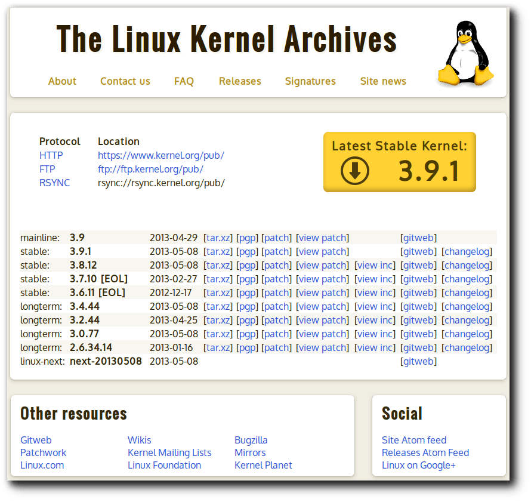Kernel.org erstrahlt in einem neuen CSS-Gewand.
Doch zwischenzeitlich bekam kernel.org ein Design unter MIT-Lizenz zur Verfügung gestellt [8] und man zog dieses vor, da es weniger nach „Standard“ aussehe. Verbesserungen können hier immer noch beigesteuert werden, die Quellen der Seite stehen in einem GIT-Repositorium [9] zur allgemeinen Verfügung.
Linux im Orbit
Es scheint auf den ersten Blick ein exotischer Einsatzort für Linux zu sein, doch das trifft nur auf die äußeren Bedingungen zu. United Space Alliance [10] stellte jüngst eine ganze Anzahl an Rechnern auf der Internationalen Raumstation ISS [11] von Windows auf Linux um. Der Dienstleister ist mit dem Betrieb von Teilen der Infrastruktur für die ISS beauftragt und benötigt ein Betriebssystem, das widerstandsfähig und zuverlässig ist. Da die betroffenen Computer Teil des „OpsLAN“ sind, dem Netz, das der Kontrolle der Station dient, misst dies dem Vertrauen in Linux einen besonderen Wert bei. United Space Alliance wandte sich an die Linux Foundation, um die eigenen Mitarbeiter und Entwickler vor der Umstellung zu schulen [12].Die Internationale Raumstation mit angedocktem ATV. © NASA (Public Domain)
Linux ist definitiv kein Neuling in Wissenschaft und Raumfahrt. Der bereits seit zwei Jahren auf der ISS befindliche Robonaut [13] trägt Linux im Herzen und auch der bereits drei Mal erfolgreich gestartete Raumtransporter Dragon [14] wird durch Linux auf seinen drei Steuerrechnern kontrolliert. Für SpaceX, Hersteller der Dragon, ist auch die Mitteilsamkeit von Linux ein Argument [15]. Die von den Steuerrechnern gelieferten Datenmengen können nach jedem Flug ausgewertet werden und helfen damit beim Erkennen von Problemen.
Pinguinpflegerinnen
Der Linux-Kernel ist überwiegend in Männerhand, nur wenige Frauen sind aktiv an der Entwicklung beteiligt und noch weniger haben einen ähnlichen Bekanntheitsgrad erreicht wie die Betreuerin des xHCI/USB-3.0-Treiber-Zweiges Sarah Sharp [16]. Insofern bietet es sich geradezu an, dass sie als Mentorin für ein Projekt tätig wird, welches das Engagement von Frauen in der Kernel-Entwicklung fördern soll. Die Rede ist hier vom Outreach Program for Women (OPW) [17], an dem sich in diesem Jahr von Juni bis September auch die Entwickler des Linux-Kernels beteiligen [18]. 41 Bewerberinnen gibt es für das „Praktikum“, von denen 18 insgesamt 374 Kernel-Patches als Teil ihrer Bewerbung eingereicht hatten. 137 Patches von 11 dieser Frauen wurden auch in den jeweils passenden Zweig aufgenommen. Leider stehen nur sechs Praktikantenplätze zur Verfügung, doch Sharp hofft darauf, dass diese Zahl zur nächsten Runde des OPW gesteigert werden kann: „Wir jammern seit Jahren darüber, nicht genügend Frauen beim Linux Kernel zu haben und es ist an der Zeit, etwas Konstruktives zu tun, um mehr Frauen in die Kernel Community zu holen.“ [19] Links[1] https://lkml.org/lkml/2013/5/11/155
[2] http://de.wikipedia.org/wiki/Interrupt
[3] http://www.freiesmagazin.de/freiesMagazin-2013-05
[4] https://lkml.org/lkml/2013/5/20/577
[5] https://lkml.org/lkml/2013/5/26/212
[6] http://www.kernel.org
[7] http://www.freiesmagazin.de/freiesMagazin-2013-04
[8] https://www.kernel.org/fifty-shades-of-tux.html
[9] https://git.kernel.org/cgit/docs/kernel/website.git
[10] http://de.wikipedia.org/wiki/United_Space_Alliance
[11] http://de.wikipedia.org/wiki/Internationale_Raumstation
[12] http://www.pro-linux.de/news/1/19770/nasa-stellt-raumstation-iss-von-windows-auf-linux-um.html
[13] http://de.wikipedia.org/wiki/Robonaut
[14] http://de.wikipedia.org/wiki/Dragon_(Raumschiff)
[15] http://www.pro-linux.de/news/1/19538/spacex-setzt-komplett-auf-linux.html
[16] http://sarah.thesharps.us
[17] https://live.gnome.org/OutreachProgramForWomen
[18] http://www.linux-magazin.de/NEWS/Frauen-an-den-Kernel
[19] http://sarah.thesharps.us/2013/05/23/%EF%BB%BF%EF%BB%BFopw-update/
| Autoreninformation |
| Mathias Menzer (Webseite) behält die Entwicklung des Linux-Kernels im Blick, um über kommende Funktionen von Linux auf dem laufenden zu bleiben und immer mit interessanten Abkürzungen und komplizierten Begriffen dienen zu können. |
Diesen Artikel kommentieren
Zum Index
Firefox-Erweiterungen mit dem Add-on-SDK erstellen – Teil IV
von Markus Brenneis Im letzten Artikel der Reihe [1] wurde gezeigt, wie Panels angelegt werden und wie die Kommunikation über Content-Skripte funktioniert. In diesem Teil soll es nun darum gehen, wie man es dem Benutzer ermöglicht, Einstellungen zu ändern, und wie die Erweiterung in verschiedene Sprachen übersetzt werden kann.Einstellungen
Anlegen von Einstellungen
Das SDK bietet mit dem Modul simple-prefs [2] ein einfaches Mittel an, mit dem man es dem Benutzer ermöglichen kann, Einstellungen der Erweiterung zu ändern. Um beispielsweise eine Checkbox anzulegen, die es dem Benutzer erlauben soll, die Anzeige des Artikels in einem Panel zu deaktivieren, fügt man folgenden Code in die package.json ein:"preferences": [{
"name": "use_panel",
"title": "Panel benutzen",
"description": "Den Artikelanfang in einem Panel anzeigen, statt die Seite in einem Tab zu laden",
"type": "bool",
"value": true
}]
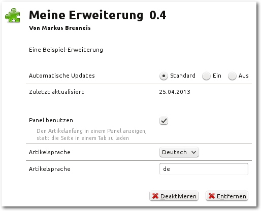"name": "use_panel",
"title": "Panel benutzen",
"description": "Den Artikelanfang in einem Panel anzeigen, statt die Seite in einem Tab zu laden",
"type": "bool",
"value": true
}]
Die Einstellungen der Erweiterung mit einer Checkbox, einem Textfeld und einer Dropdown-Liste.
Alle Einstellungen der Erweiterung werden in der Eigenschaft preferences aufgezählt. name dient der Identifizierung der Einstellung und muss angegeben werden, wenn der Einstellungswert ausgelesen wird. Der Einstellungswert wird in der Konfiguration (about:config [3]) unter dem Namen extensions.jid1-RSMHU8JbD6sBDA@jetpack.use_panel gespeichert, wobei die Zeichenkette zwischen . und @ die Id der Erweiterung ist. title wird als Beschriftung verwendet und das optionale Attribut description enthält eine Beschreibung der Option, die unter dem Titel angezeigt wird. Mit "type": "bool" wird ausgedrückt, dass eine Checkbox angezeigt werden soll. Mit dem value-Attribut wird der Standardwert festgelegt; diese Checkbox ist also standardmäßig markiert. Daneben gibt es noch eine ganze Reihe andere Typen, die in der Dokumentation [4] aufgeführt sind; auf ein paar von ihnen wird noch eingegangen werden. Ferner soll es dem Benutzer ermöglicht werden, auszuwählen, in welcher Sprache der Artikel angezeigt wird. Dazu kann z. B. ein Textfeld ("type": "string") angezeigt werden:
{
"name": "language",
"title": "Artikelsprache",
"type": "string",
"value": "de"
}
Um zu verhindern, dass ungültige Werte in das Textfeld eingetragen werden,
sollte als Alternative auf eine
Dropdown-Liste [5] zurückgegriffen
werden ("type": "menulist"). Damit ergibt sich insgesamt
folgender Code für die Datei
package.json:
"name": "language",
"title": "Artikelsprache",
"type": "string",
"value": "de"
}
{
"name": "meine-erweiterung",
"license": "GPL 3.0",
"author": "Markus Brenneis",
"version": "0.4",
"fullName": "Meine Erweiterung",
"id": "jid1-RSMHU8JbD6sBDA",
"description": "Eine Beispiel-Erweiterung",
"preferences": [{
"name": "use_panel",
"title": "Panel benutzen",
"description": "Den Artikelanfang in einem Panel anzeigen, statt die Seite in einem Tab zu laden",
"type": "bool",
"value": true
}, {
"name": "language",
"title": "Artikelsprache",
"type": "menulist",
"value": "de",
"options": [
{
"value": "de",
"label": "Deutsch"
},
{
"value": "en",
"label": "English"
}
]
}]
}
Listing: package.json
Die Auswahlmöglichkeiten der Dropdown-Liste werden in der Eigenschaft options
aufgezählt. Jede Auswahlmöglichkeit besteht aus einer Beschriftung, die als
Listeneintrag angezeigt wird, und einem zugeordneten Wert, welcher in der
Konfiguration gespeichert wird und ausgelesen werden kann.
Die Einstellungen können geändert werden, indem der Add-ons-Manager geöffnet
wird („Extras -> Add-ons“), die Kategorie „Erweiterungen“ ausgewählt wird und dann
bei dem Eintrag der Erweiterung auf „Einstellungen“ geklickt wird.
"name": "meine-erweiterung",
"license": "GPL 3.0",
"author": "Markus Brenneis",
"version": "0.4",
"fullName": "Meine Erweiterung",
"id": "jid1-RSMHU8JbD6sBDA",
"description": "Eine Beispiel-Erweiterung",
"preferences": [{
"name": "use_panel",
"title": "Panel benutzen",
"description": "Den Artikelanfang in einem Panel anzeigen, statt die Seite in einem Tab zu laden",
"type": "bool",
"value": true
}, {
"name": "language",
"title": "Artikelsprache",
"type": "menulist",
"value": "de",
"options": [
{
"value": "de",
"label": "Deutsch"
},
{
"value": "en",
"label": "English"
}
]
}]
}
Auslesen der Einstellungen
Jetzt müssen die Einstellungen mit „Sinn“ gefüllt werden. Dazu wird zunächst in der main.js das simple-prefs-Module eingebunden:var simpleprefs=require("sdk/simple-prefs");
Zum Deaktivieren des Panels wird die openArticleInPanel-Funktion wie folgt
angepasst:
function openArticleInPanel(widgetView) {
if(simpleprefs.prefs.use_panel) {
panel.port.emit("loadPage", "https://de.m.wikipedia.org/w/index.php?search="
+ selectedText);
widgetView.panel=panel;
} else {
openArticle();
widgetView.panel=null;
}
}
Mit if(simpleprefs.prefs.use_panel) wird abgefragt, ob das Benutzen des Panels
aktiviert ist. Ist dies der Fall, wird – wie vorher auch – die Seite im Panel
geladen. Neu ist jetzt, dass dem Widget explizit das Panel zugeordnet wird. Hier
wird nicht widget verwendet, sondern das an die Funktion übergebene
widgetView-Objekt, welches das konkrete Widget repräsentiert, welches gerade
angeklickt wurde. Wenn das Panel nicht aktiviert ist, wird die Funktion
openArticle, die den Artikel in einem Tab anzeigt, aufgerufen und die
Zuordnung des Panels zu dem Widget entfernt, indem die panel-Eigenschaft auf
null [6] gesetzt wird. Diese etwas
umständlich aussehende Lösung ist notwendig, weil ein widget.hide(); nicht
funktionieren würde, da das Widget erst angezeigt wird, wenn die Funktion
openArticleInPanel komplett abgearbeitet worden ist; das Panel würde also nach
dem Ausblenden direkt wieder eingeblendet werden.
Die Implementierung der Sprachauswahl funktioniert analog: In der Zeichenkette
if(simpleprefs.prefs.use_panel) {
panel.port.emit("loadPage", "https://de.m.wikipedia.org/w/index.php?search="
+ selectedText);
widgetView.panel=panel;
} else {
openArticle();
widgetView.panel=null;
}
}
https://de.m.wikipedia.org/w/index.php?search=
wird das „de“ durch den Einstellungswert ersetzt:
https://"+simpleprefs.prefs.language+".m.wikipedia.org/w/index.php?search=
Übersetzungen
Das SDK bietet die Möglichkeit [7], Zeichenketten im HTML- und JavaScript-Code sowie Titel und Beschreibungen der Einstellungen zu lokalisieren [8]; die letzten beiden Möglichkeiten werden hier beschrieben.Übersetzungsdateien
Da es (noch) keine Möglichkeit gibt, automatisch eine Datei mit allen Strings, die übersetzt werden können, zu erstellen, muss dies von Hand gemacht werden. Dazu wird zunächst im obersten Ordner der Erweiterung (der Ordner, in dem die package.json ist) ein Ordner locale erstellt. In diesem werden nach dem Muster xx-YY.properties benannte Dateien angelegt, welche die Übersetzungen im properties-Format [9] enthalten; xx-YY ist dabei der Sprachcode [10], z. B. de-DE für das in Deutschland gesprochene Deutsch und en-US für amerikanisches Englisch. In die Datei de-DE.properties fügt man folgenden Inhalt ein, um der Variablen getWikipediaArticle die Zeichenkette Wikipediaartikel aufrufen zuzuordnen.getWikipediaArticle=Wikipediaartikel aufrufen
Übersetzungen im JavaScript-Code
Für das Übersetzen des JavaScript-Codes wird das Module l10n [11] benötigt. Aus Kompatibilitätsgründen mit der Anwendung gettext ist es üblich, den Bezeichner _ zu verwenden.var _=require("sdk/l10n").get;
Anstatt jetzt
label: "Wikipediaartikel aufrufen"
zu benutzen, wird
label: _("getWikipediaArticle")
verwendet. _("getWikipediaArticle") wird dann durch die entsprechende
Zeichenkette aus der properties-Datei ersetzt. Firefox wählt automatisch die
Datei aus, die am Besten zu der Sprache, die die Firefox-Benutzeroberfläche
hat, passt. Wenn diese Sprache z. B. de-AT ist, aber keine entsprechende
Übersetzung vorhanden ist, wird zuerst auf de zurückgegriffen, wenn nicht
vorhanden auf andere de-*-Übersetzungen und, wenn diese auch nicht zur Verfügung
stehen, auf Englisch oder – wenn nicht verfügbar – auf die erste gefundene
Übersetzungsdatei. Ist gar keine Übersetzungsdatei vorhanden, wird einfach der
Bezeichner als Zeichenkette angezeigt.
Übersetzen der Einstellungen
Im Gegensatz zum JavaScript-Code braucht es bei den Einstellungen keine _-Funktion, stattdessen werden in der properties-Datei Bezeichner der Form {Einstellungsname}_title bzw. {Einstellungsname}_description verwendet. Zum Übersetzen der Optionen der Dropdown-Liste ist das Muster {Einstellungsname}_options.{Label}. Damit ergibt sich folgender Inhalt:use_panel_title=Panel benutzen
use_panel_description=Den Artikelanfang in einem Panel anzeigen, statt die Seite in einem Tab zu laden
language_title=Artikelsprache
language_options.English=Englisch
Es sei angemerkt, dass es normalerweise besser ist, in der package.json-Datei
englische Strings zu benutzen, da so die Bezeichner der Optionen einen für den
Übersetzer verständlichen Namen haben und es keine Mischung von Deutsch und
Englisch bei den Bezeichner gibt.
use_panel_description=Den Artikelanfang in einem Panel anzeigen, statt die Seite in einem Tab zu laden
language_title=Artikelsprache
language_options.English=Englisch
Hilfe beim Übersetzen
Will man ein breites Publikum erreichen, sollte die Erweiterung in möglichst viele Sprachen übersetzt werden. Dazu kann man sich kostenlose Hilfe aus der Open-Source-Gemeinschaft holen. Die beliebte Plattform BabelZilla [12], die auf das Übersetzen von Erweiterungen für Mozilla-Anwendungen spezialisiert ist, unterstützt leider noch nicht das Dateiformat des SDK (Stand: April 2013). Es stehen aber andere Lokalisierungsplattformen wie z. B. transifex [13] zur Verfügung, wo man die zu übersetzenden Dateien (als Grundlage dienen in der Regel die englischen Zeichenketten) hochladen kann. Die vollständige Erweiterung kann wieder als Archiv ffox_addonsdk_4.tar.gz und als installierbare Erweiterung ffox_addonsdk_4.xpi heruntergeladen werden. Links[1] http://www.freiesmagazin.de/freiesMagazin-2013-04
[2] https://addons.mozilla.org/en-US/developers/docs/sdk/latest/modules/sdk/simple-prefs.html
[3] http://kb.mozillazine.org/About:config
[4] https://addons.mozilla.org/en-US/developers/docs/sdk/latest/modules/sdk/simple-prefs.html#Setting Types
[5] https://de.wikipedia.org/wiki/Dropdown-Liste
[6] https://de.wikipedia.org/wiki/Nullwert
[7] https://addons.mozilla.org/en-US/developers/docs/sdk/latest/dev-guide/tutorials/l10n.html
[8] https://de.wikipedia.org/wiki/Lokalisierung_(Softwareentwicklung)
[9] https://de.wikipedia.org/wiki/Java-Properties-Datei
[10] https://wiki.mozilla.org/L10n:Locale_Codes
[11] https://addons.mozilla.org/en-US/developers/docs/sdk/latest/modules/sdk/l10n.html
[12] http://www.babelzilla.org/
[13] https://www.transifex.com/
| Autoreninformation |
| Markus Brenneis (Webseite) hat 2007 sein erstes Firefox-Add-on geschrieben und 2012 erstmals das Add-on-SDK benutzt. |
Diesen Artikel kommentieren
Zum Index
LibreOffice 4.0 selbst kompilieren
von Hans-Joachim Baader Eine der Eigenschaften Freier Software ist ganz offensichtlich, dass man den Quellcode beziehen und die Software selbst kompilieren kann. Das heißt aber nicht, dass das immer einfach ist. Generell gilt die Regel, dass der Schwierigkeitsgrad mit der Projektgröße zunimmt – vom Aufwand ganz abgesehen. In diesem Artikel soll am Beispiel LibreOffice 4.0 gezeigt werden, wie es um die Kompilierbarkeit eines sehr großen Projektes bestellt ist. Redaktioneller Hinweis: Der Artikel „LibreOffice 4.0 selbst compilieren“ erschien erstmals bei Pro-Linux [1].Einleitung
Einige allgemeine Hinweise zum Kompilieren von Programmen hatte Pro-Linux bereits 2003 in einem Einsteiger-Artikel [2]. Es wäre eigentlich an der Zeit, diesen etwas zu verallgemeinern und zu erweitern. Doch hier soll es nur um das gerade erschienene LibreOffice 4.0 [3] gehen. Warum gerade LibreOffice 4.0? Die Antwort ist einfach: LibreOffice ist ein sehr großes Projekt, das gemäß der in der Einleitung genannten Regel vielleicht nicht gerade einfach zu bauen ist. Die Tatsache, dass neben C++ auch Python für einige zentrale und Java für einige zusätzliche Funktionen benötigt werden, macht es sicher nicht einfacher. Vor langer Zeit, bei OpenOffice.org 1.1, war das Kompilieren ein sehr komplizierter Vorgang. Doch LibreOffice hat in den letzten zwei Jahren sehr stark am Code gearbeitet und das Generiersystem komplett umgestellt. Dadurch sollte die Sache erleichtert werden. Also an die Arbeit!Download
Auf der Downloadseite der Document Foundation findet man zu LibreOffice acht Dateien mit Quellcode und PGP-Signatur [4]:libreoffice-4.0.0.3.tar.xz
libreoffice-4.0.0.3.tar.xz.asc
libreoffice-dictionaries-4.0.0.3.tar.xz
libreoffice-dictionaries-4.0.0.3.tar.xz.asc
libreoffice-help-4.0.0.3.tar.xz
libreoffice-help-4.0.0.3.tar.xz.asc
libreoffice-translations-4.0.0.3.tar.xz
libreoffice-translations-4.0.0.3.tar.xz.asc
Während der eigentliche Quellcode im 99 MB großen
libreoffice-4.0.0.3.tar.xz zu finden ist, enthält
libreoffice-dictionaries-4.0.0.3.tar.xz die Wörterbücher mit 34 MB
Umfang, libreoffice-help-4.0.0.3.tar.xz die Online-Hilfe mit lediglich
1,8 MB und libreoffice-translations-4.0.0.3.tar.xz die Übersetzungen, 123
MB groß.
Man benötigt nur libreoffice-4.0.0.3.tar.xz und
libreoffice-translations-4.0.0.3.tar.xz. Warum nur diese beiden, wird
später erklärt. Zwar sind die Übersetzungen optional, aber wer ein
nicht-englisches LibreOffice verwenden will, wird sie benötigen. Der
Download beträgt insgesamt also etwa 222 MB.
libreoffice-4.0.0.3.tar.xz.asc
libreoffice-dictionaries-4.0.0.3.tar.xz
libreoffice-dictionaries-4.0.0.3.tar.xz.asc
libreoffice-help-4.0.0.3.tar.xz
libreoffice-help-4.0.0.3.tar.xz.asc
libreoffice-translations-4.0.0.3.tar.xz
libreoffice-translations-4.0.0.3.tar.xz.asc
Verifikation der Archive
Nun ein Punkt, der gerne einmal übersprungen wird. Das LibreOffice-Team, genauer gesagt das LibreOffice-Build-Team, hat die Quellcode-Archive mit PGP signiert, sodass die Benutzer verifizieren können, dass sie tatsächlich den originalen und unmodifizierten Quellcode heruntergeladen haben. Eine andere, nicht ganz so sichere Methode wäre es, den kryptografischen Hash (bevorzugt SHA-1 [5] oder besser) der Dateien zu publizieren. Zum Schutz vor Manipulationen sollten die Hashes nicht (nur) bei den Dateien abgelegt, sondern auch an anderer Stelle publiziert sein. Bei GPG-Signaturen [6] ist das nicht nötig, da ein Angreifer für eine Manipulation den geheimen Teil des Schlüssels besitzen müsste. Zur Verifikation der Archive muss man den öffentlichen Teil des Schlüssels von LibreOffice kennen. Dieser ist aber glücklicherweise auf den öffentlichen Schlüsselservern abgelegt, so dass man ihn mit einem Befehl holen kann:$ gpg --recv-keys AFEEAEA3
Nun ist die Verifikation sehr einfach:
$ gpg --verify libreoffice-4.0.0.3.tar.xz.asc
Dieser Aufruf setzt voraus, dass libreoffice-4.0.0.3.tar.xz im gleichen
Verzeichnis wie libreoffice-4.0.0.3.tar.xz.asc liegt. Ist das nicht der
Fall, kann man trotzdem verifizieren:
$ gpg --verify libreoffice-4.0.0.3.tar.xz.asc <Pfad>/libreoffice-4.0.0.3.tar.xz
Zwar wird möglicherweise eine Warnung ausgegeben, aber die Unterschrift wird als korrekt erkannt und der Haupt-Fingerabdruck ausgegeben:
gpg: Unterschrift vom Mi 30 Jan 2013 17:38:12 CET mittels RSA-Schlüssel ID AFEEAEA3
gpg: Korrekte Unterschrift von "LibreOffice Build Team (CODE SIGNING KEY) <build@documentfoundation.org>"
gpg: WARNUNG: Dieser Schlüssel trägt keine vertrauenswürdige Signatur!
gpg: Es gibt keinen Hinweis, daß die Signatur wirklich dem vorgeblichen Besitzer gehört.
Haupt-Fingerabdruck = C283 9ECA D940 8FBE 9531 C3E9 F434 A1EF AFEE AEA3
gpg: Korrekte Unterschrift von "LibreOffice Build Team (CODE SIGNING KEY) <build@documentfoundation.org>"
gpg: WARNUNG: Dieser Schlüssel trägt keine vertrauenswürdige Signatur!
gpg: Es gibt keinen Hinweis, daß die Signatur wirklich dem vorgeblichen Besitzer gehört.
Haupt-Fingerabdruck = C283 9ECA D940 8FBE 9531 C3E9 F434 A1EF AFEE AEA3
Entpacken
Die Archive entpacken sich alle in das Verzeichnis libreoffice-4.0.0.3 unterhalb des aktuellen Verzeichnisses. Man entpackt sie mit$ tar --lzma -xvf libreoffice-4.0.0.3.tar.xz
$ tar --lzma -xvf libreoffice-translations-4.0.0.3.tar.xz
Wer ein veraltetes tar besitzt, das noch keine Unterstützung für
xz-Archive enthält, schreibt stattdessen
$ tar --lzma -xvf libreoffice-translations-4.0.0.3.tar.xz
$ xzcat libreoffice-4.0.0.3.tar.xz | tar xvf
Entpackt belegen die Quellen über 2,5 GB, wobei dieser Wert je nach
Dateisystem schwanken kann.
Kompilieren
Das Kompilieren und Ausführen von LibreOffice ist auf der Entwickler-Seite gut beschrieben [7]. Ein großes Projekt wie LibreOffice setzt einiges an externen Komponenten voraus. Diese sind in den Archiven aller größeren Linux-Distributionen vorhanden, aber nicht unbedingt installiert. Je nach Distribution kann man nun eventuell eines der folgenden Kommandos ausführen, um sie zu installieren (als Root).- Debian: apt-get build-dep libreoffice
- openSUSE: zypper si -d libreoffice
- Fedora: yum-builddep libreoffice
E: Sie müssen einige »source«-URIs für Quellpakete in die sources.list-Datei eintragen.
Der Umfang der Abhängigkeiten ist beachtlich; je nachdem, was bereits
installiert ist, können noch über 170 Pakete zusätzlich erforderlich sein.
Die nächsten Schritte sind simpel, dauern jedoch eine Weile. Diese werden
natürlich nicht als Root, sondern als normaler Benutzer ausgeführt.
$ ./autogen.sh
$ make
$ make dev-install
Das make kann durchaus eine Stunde in Anspruch nehmen. Das anschließende
make dev-install installiert das Resultat nur innerhalb des
Quellcode-Verzeichnisses; dies genügt aber zum Debuggen und man kann LibreOffice auch permanent aus diesem Verzeichnis starten.
Die Kompilierung wird fehlschlagen, wenn der Rechner währenddessen keine
Internet-Verbindung hat, denn das Generiersystem lädt eine Menge
zusätzlicher Dateien herunter und kompiliert sie. Dabei handelt es sich
vermutlich – genaue Angaben liegen nicht vor – um die Abhängigkeiten, die
auf dem System nicht oder nicht in der passenden Version vorgefunden werden.
Es ist also wohl gar nicht nötig, alle mit der Paketverwaltung ermittelten
Abhängigkeiten zu installieren – LibreOffice bedient sich selbst. Aus diesem
Grund muss man auch die Wörterbücher und die Online-Hilfe nicht manuell
herunterladen. LibreOffice holt sie sowieso, gleichgültig, ob sie bereits
vorhanden sind oder nicht.
Nach der Kompilierung belegt das LibreOffice-Verzeichnis ca. 8,3 GB auf der
Platte. Nun hat man zwei
Möglichkeiten, das Resultat zu nutzen.
$ make
$ make dev-install
# make install
(als Root) installiert die Software komplett ins System, und zwar unter
/usr/local, wenn man die Optionen nicht geändert hat.
Die Möglichkeit der Systeminstallation bietet sich an, wenn man den
Quellcode nicht mehr benötigt, weil man danach das ganze Quellverzeichnis
löschen kann. Die andere ist, LibreOffice an Ort und Stelle zu nutzen. Wer
LibreOffice im Debugger GDB [8] starten will,
gibt einfach
$ make debugrun
ein. Zur einfachen Nutzung kann man stattdessen
$ cd install/program
$ . ./ooenv
$ ./soffice --writer
verwenden; hier wird die Textverarbeitung Writer gestartet. Warum die
Oberfläche allerdings in Englisch erscheint, ist unklar. Vielleicht muss man
doch eine vollständige Installation durchführen, um in den Genuss der
Übersetzungen zu kommen.
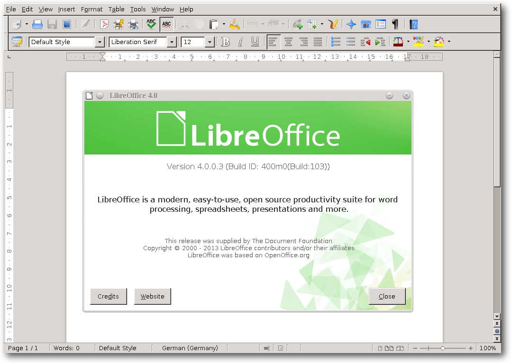$ . ./ooenv
$ ./soffice --writer
Das selbst kompilierte LibreOffice mit englischsprachiger Oberfläche.
Der Artikel endet hier, doch der interessante Teil der Übung beginnt erst jetzt. Man kann nun den Quellcode in Augenschein nehmen, Änderungen vornehmen oder einen Fork [9] erstellen … Das LibreOffice-Wiki enthält einige Hinweise für Einsteiger, wie man sich an der Entwicklung beteiligen kann. Es gibt eine Liste von einfachen Aufgaben für den Anfang [10], und bei Fragen stehen erfahrenere Entwickler im IRC und auf den Mailinglisten bereit. Wer lieber Erweiterungen schreiben will, findet unter anderem die API-Dokumentation auf den Projektseiten [11].
Fazit
LibreOffice ist überraschend einfach zu kompilieren. Es sind zwar einige Pakete zu installieren, ohne die das Bauen nicht möglich ist, aber das sollte keine Schwierigkeit darstellen. Ansonsten benötigt man nur etwas Geduld – und eine Menge Plattenplatz, an die 10 GB. Fehler traten beim Kompilieren erfreulicherweise nicht auf. Somit steht Interessierten an einer Beteiligung an LibreOffice nichts im Wege. Links[1] http://www.pro-linux.de/-0102652
[2] http://www.pro-linux.de/artikel/2/1069/unter-linux-software-installieren.html
[3] https://www.libreoffice.org/
[4] http://download.documentfoundation.org/libreoffice/src/4.0.0/
[5] https://de.wikipedia.org/wiki/SHA-1
[6] https://de.wikipedia.org/wiki/GNU_Privacy_Guard
[7] http://www.libreoffice.org/developers-2/
[8] http://sourceware.org/gdb/
[9] https://de.wikipedia.org/wiki/Abspaltung_(Softwareentwicklung)
[10] http://wiki.documentfoundation.org/Easy_Hacks
[11] http://api.libreoffice.org/
| Autoreninformation |
| Hans-Joachim Baader (Webseite) befasst sich seit 1993 mit Linux. 1994 schloss er erfolgreich sein Informatikstudium ab. Er ist einer der Betreiber von Pro-Linux.de. |
Diesen Artikel kommentieren
Zum Index
PDF-Dokumente schreiben mit Pandoc und Markdown
von Daniel Stender Wen es nicht stört, dass beim Schreiben von Texten für die Erzeugung einer ordentlich gesetzten PDF-Datei auch noch weitere Programme aufgerufen werden müssen, der kann sich dafür eine äußerst produktive Werkzeugkette mit Pandoc und Markdown aufsetzen, welche auf vereinfachten Auszeichnungssprachen basiert. Das bietet sich vor allem nicht zuletzt für diejenigen an, die sich nicht in das Schwergewicht LaTeX [1] einarbeiten oder sich keine LaTeX-Distribution auf ihrem Computer installieren wollen oder können, aber trotzdem Editor-basiert arbeiten möchten. Denn auch für recht anspruchsvolle Dokumente stellt dieser Ansatz mittlerweile eine beachtliche Alternative für das große Textsatzsystem dar. Dieser Artikel führt in das Erstellen von PDF-Dokumenten mit Pandoc und Markdown ein und bezieht sich dabei mit Ubuntu 12.04 LTS auf ein typisches Linuxsystem. Dabei liegt die Gewichtung auf Elementen, die beim Schreiben akademischer Beiträge benötigt werden, nämlich unter anderem auf Fußnoten und den ordentlichen Nachweis der verwendeten Quellen.Markup vs. WYSIWYG
„What-you-see-is-what-you-get“-Textverarbeitungen wie zum Beispiel LibreOffice Writer [2] machen es möglich, elektronische Textdokumente auf der Layout-Ebene genau so zu bearbeiten, wie sie hinterher bei der Druckausgabe oder nach dem Export als PDF-Dokument aussehen. Demgegenüber stehen Dokumentenprozessoren wie zum Beispiel das Textsatzsystem LaTeX, die grundsätzlich dadurch charakterisiert sind, dass elektronische Dokumente der Druckvorstufe und/oder zur elektronischen Betrachtung aus Quelldateien generiert werden, die grundsätzlich unabhängig vom Dokumentenprozessor mit einem Editor bearbeitet werden. In diesen Quelldateien findet sich neben dem eigentlichen Text auch das spätere Layout beschrieben. Beides befindet sich damit sozusagen auf derselben Ebene. Unabhängig davon, ob zum Beispiel LaTeX mit verschiedenen speziellen Zusatzpaketen einen wesentlich umfangreicheren Funktionsumfang als bspw. LibreOffice Writer bereithält, hat es auch gewisse Vorteile, nicht Binärdateien, sondern Unicode-codierte Textdateien wie bei einem Programmquellcode zu bearbeiten. So können auf diese u. a. Patches [3] angewendet werden, um Korrekturen unkompliziert zu managen, oder die Quelldateien unter eine Versionskontrolle wie Subversion oder Git [4] gestellt werden, was auch für die kollaborative Bearbeitung eines Textes vielfältige Möglichkeiten bereithält. Dokumentenprozessoren wie Pandoc erlauben es, aus ein und derselben Quelldatei unterschiedliche Zielformate zu generieren (Stichwort: „Multi target publishing“), und vor allem wenn zum Beispiel E-Book-Formate wie EPUB [5] anvisiert werden, bei denen der Text nicht mehr als gedrucktes Buch dargestellt wird, überwiegen meiner Meinung nach die Vorteile, in einer vom Layout unabhängigen Umgebung zu arbeiten. Im LaTeX-Quellcode zum Beispiel werden Layout-Elemente wie Überschriften und Fußnoten durch bestimmte Steuerbefehle gekennzeichnet. Im Gegensatz dazu wird in den sogenannten vereinfachten Auszeichnungssprachen (Lightweight markup languages [6]) alles mit wenigen Zeichen und einfachen Einrückungen erreicht. Das Prinzip dabei folgt dem, was meist schon rein intuitiv auch in E-Mails oder auf elektronischen Notizzetteln angewendet wird. Wenn nämlich zum Beispiel Überschriften mit Minuszeichen unterstrichen oder Auflistungen mittels Sternchen erzeugt werden. Diese Auszeichnungssprachen werden häufig scherzhaft „no markup languages“ genannt, aber tatsächlich ist ein so formatierter Text auch schon ohne Weiterverarbeitung äußerst bequem lesbar. Markdown [7], das als HTML-Vorstufe entwickelt worden ist, und ReStructuredText (reST) [8], das aus der Python-Dokumentation stammt, begegnet man unter den vereinfachten Markupsprachen mittlerweile vermutlich am häufigsten. Sie halten einen recht umfassenden Funktionsumfang bereit und aus Quelldateien dieser Sprachen lassen sich mit geeigneten Prozessoren wie Pandoc sehr einfach hochwertige elektronische Dokumente wie zum Beispiel PDF-Dateien erzeugen.Pandoc
Bei Pandoc [9] handelt es sich um einen sehr ausgereiften und umfangreichen Markupkonverter und Dokumentenprozessor. Pandoc beherrscht zwar neben vielen anderen Markups auch reST, eignet sich aber gerade auch für die Dokumentation mit Markdown, weil es einen großen Satz von Erweiterungen dafür bereitstellt. Pandoc wird zur Zeit laufend weiterentwickelt und verbessert, weswegen auch für aktuelle Distributionen meist nur recht veraltete Versionen verfügbar sind (aktuell: 1.11.1, Ubuntu 12.04: 1.9.1, Ubuntu 12.10: 1.9.4). Auf der Pandoc-Seite wird ein übersichtliches Änderungsprotokoll gepflegt, in dem man alle Verbesserungen anhand der jeweiligen Versionsnummer detailliert nachvollziehen kann [10].Pandoc installieren
Pandoc ist in der funktionalen Programmiersprache Haskell [11] implementiert. So besteht die Möglichkeit, die aktuellste Version von Pandoc ohne größeren Aufwand über das Haskell-Buildsystem Cabal auf den eigenen Computer zu bekommen [12]. Für die Benutzung benötigt man das Paket cabal-install. Danach aktualisiert man für den nun zur Verfügung stehenden Manager Cabal zunächst das Verzeichnis der erhältlichen Haskell-Programme:$ cabal update
Nun kann Pandoc mittels Cabal heruntergeladen und kompiliert werden:
$ cabal install pandoc
Dabei werden alle benötigten Abhängigkeiten automatisch mitgezogen. Da
alles
in das lokale Verzeichnis ~/.cabal geschrieben wird, benötigt man keine
Superuser-Rechte für die Benutzung von Cabal. Schließlich muss nur noch die
Pfadvariable der Shell um den Pfad der von Cabal erzeugten ausführbaren Dateien
erweitert werden. Dazu muss die folgende Zeile
in die ~/.bashrc hinzugefügt werden:
export PATH=$HOME/.cabal/bin:$PATH
Wenn nun noch das Terminalfenster geschlossen und neu aufgerufen wird, steht
Pandoc fertig auf der Kommandozeile bereit.
Markdown
Markdown wird mit einem beliebigen Texteditor geschrieben. Auf aktuellen Systemen läuft dabei Unicode „unter der Haube“. Die Dateiendung kann dabei grundsätzlich auch frei gewählt werden, es empfiehlt sich allerdings entweder die Endung .markdown oder .md dafür zu verwenden. Diese Dateien lassen sich auch ohne jegliche weitere Software und grundsätzlich systemübergreifend auf jedem beliebigen Rechner bearbeiten. Viele Editoren halten für Markdown spezielle Modi bzw. Plug-ins bereit. Für Emacs gibt es bspw. den Markdown-Mode, der Syntax-Highlighting und Tastenkombinationen für das schnelle Einfügen von bestimmten Elementen wie zum Beispiel Hyperlinks zur Verfügung stellt [13]. Die einzelnen Funktionen von Markdown in Pandoc lassen sich im Handbuch auf der Pandoc-Seite nachlesen [14]. Im Netz findet sich auch eine deutsche Übersetzung der Original-Spezifikation [15], allerdings ist diese gegenüber den Erweiterungen, die Pandoc zur Verfügung stellt (u. a. Fußnoten und Tabellen), sehr eingeschränkt. Zur beispielhaften Nutzung wird hier ein Beispieldokument pandoc_beispiel1.md für Pandocs Markdown genutzt. Dieses Beispieldokument enthält eine Reihe von verschiedenen Markup-Elementen:- Zeilenvorschübe im Quelltext werden grundsätzlich ignoriert, wodurch sich der bearbeitete Text „strecken“ lässt.
- Überschriften werden erzeugt, indem man einem Überschriftentext ein bis sechs Doppelkreuze (Hash-Zeichen) voranstellt, und zwar entsprechend der Gliederungstiefe.
- Hyperlinks werden in eckigen Klammer eingefasst oder es kann ein spezieller Linktext für diese angegeben werden.
- Zitatblöcke werden durch nach links geöffnete eckige Klammern am Anfang der Zeile markiert.
Fußnoten
Fußnoten [16] werden erzeugt, indem in Fließtext ein Fußnotenanker eingesetzt wird, während der eigentliche Fußnotentext grundsätzlich beliebig irgendwo im Markdown-Dokument platziert werden kann (sinnvollerweise aber außerhalb von Blockelementen wie Listen, Tabellen, usw.). So kann man den jeweiligen Fußnotentext etwa direkt unterhalb des jeweiligen Abschnittes platzieren oder alle Fußnoten am Ende des Dokumentes sammeln. Die Verbindung zwischen Anker und Fußnotentext wird dabei durch beliebige Etiketten hergestellt (siehe im Beispieldokument [^blibb] und [^blubb]), wobei auch einfach manuell durchnummeriert werden kann ([^1], [^2], usw.). Es gibt aber auch die Möglichkeit, wie bei LaTeX die Fußnoten direkt in den Fließtext zu schreiben („inline footnotes“). Beide Methoden können in demselben Dokument auch kombiniert werden, was die Verwendung von Fußnoten bei Pandoc sehr flexibel macht [17].PDF erzeugen
Im Unterschied zu dem Dokumentenprozessor Rst2pdf [18], der PDF-Dateien aus reST-Quellcode direkt erzeugt und dafür die PDF-Bibliothek von Reportlab benutzt [19], greift Pandoc auf ein installiertes LaTeX-System zu, um PDF-Dateien zu generieren, wenn .pdf als Ausgabeformat gewählt wird [20]. Eine andere Möglichkeit ist es aber, den LibreOffice Writer als PDF-Engine einzusetzen: Zunächst erzeugt man aus dem Markdown-Quellcode eine ODT-Datei. Dabei muss beachtet werden, dass der Dokumentenkopf mit den Angaben für Title, Author und Date (siehe Beispieldokument) eine derjenigen Markdown-Erweiterungen von Pandoc ist, die beim Kompilieren extra freigeschaltet werden müssen [21]:$ pandoc -f markdown+mmd_title_block -o beispiel1.odt beispiel1.md
Die entstandene Datei kann man nun in LibreOffice Writer laden, in diesem
eventuell zunächst weiter bearbeiten und dort dann als PDF-Dokument
exportieren. Eine einfachere Lösung ist es aber, Unoconv [22]
für die Konvertierung zu benutzen:
$ unoconv beispiel1.odt
Dieser Konverter wird durch das gleichnamige Paket unoconv über den Paketmanager
installiert und generiert automatisch eine PDF-Datei, wenn nichts anderes beim
Aufruf angegeben wird.
Templates
Das so generierte ODT- bzw. PDF-Dokument ist allerdings im Format „US-Letter“. Zu den Standardeinstellung, die LibreOffice Writer auswirft, gehört es zum Beispiel auch, dass die Standard-Absatzvorlage sowie Autor und Datum auf „linksbündig“ eingestellt sind. Nun möchte man das erste eventuell lieber auf Blocksatz umstellen und die beiden letzten auf „zentriert“, wie der darüber stehende Titel auch. Für diese und andere Dokumenteinstellungen (wie z. B. die verwendeten Schriften) bietet Unoconv die Möglichkeit, LibreOffice-Templates zu verwenden. Ein solches Template gewinnt man, indem man ein beliebiges Dokument in LibreOffice Writer als ODF-Textdokumentenvorlage (.ott) abspeichert. Die gesamten Einstellungen dieser Dokumentenvorlage können dann ganz einfach auf die generierte PDF-Datei übertragen werden:$ unoconv -t meintemplate.ott beispiel1.odt
In der Praxis empfiehlt es sich, die ODT-Datei aus dem ersten
Konvertierungslauf separat als Vorlage für weitere Konvertierungen
abzuspeichern. Eine Dokumentenvorlage kann auch völlig leer sein und muss keinen
Text in sich tragen und lässt sich natürlich auch für andere Dokumente
verwenden.
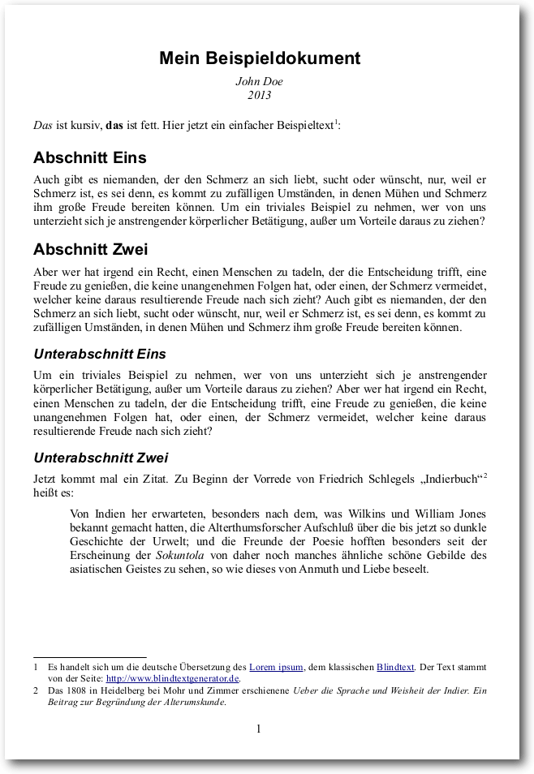Die generierte PDF-Datei aus dem Beispieldokument mit einer speziellen Dokumentenvorlage.
Bibliographie
Eine der Stärken von Pandoc sind mit Sicherheit die Funktionen für Quellen- bzw. Literaturangaben mit automatischer Erstellung eines Literaturverzeichnisses [23]. Dabei können die vom Benutzer in einer oder mehreren speziellen Dateien mit entsprechender Software gesammelten und gepflegten Literaturdatensätze vom Prozessor anhand von kurzen Zitierschlüsseln automatisch in das jeweilige Zieldokument übernommen werden [24]. Dieses Verfahren bietet viele Vorteile und Pandoc kann hierbei auf eine ganze Reihe von verschiedenen Datenformaten zugreifen. EndNote-refer-Dateien (.enl) zum Beispiel sind Datensätze, die von der kommerziellen Literaturverwaltung EndNote [25] auf einem Windowsrechner oder einem Mac erzeugt bzw. gesammelt worden sind. Pandoc kommt aber auch sowohl mit dem RIS-Format von Research Info Systems [26], als auch mit dem von der amerikanischen Kongressbibliothek entwickelten XML-Format MODS zurecht [27]. Unter den Quellendaten stellt aber vor allem das für den LaTeX-Postprozessor BibTeX [28] entwickelte Datenformat einen gewissen Standard da. Pandoc benutzt dabei die Dateiendung .bibtex, um davon das erweiterte Datenformat der BibTeX-Reimplementation BibLaTeX zu unterscheiden, aber herkömmliche .bib-Dateien brauchen nicht extra umbenannt zu werden. Ein beliebtes Literaturverwaltungsprogramm für BibTeX-Daten mit grafischer Benutzeroberfläche ist Jabref [29], das verschiedene Importfilter hat und Datensätze aus verschiedenen Online-Datenbanken beziehen kann. Jabref ist bequem mit der Paketverwaltung über das Paket jabref installierbar. Für die Einführung in das BibTeX-Format hier ein kleines Beispiel: pandoc_beispiel2.bib. Es finden sich hier drei verschiedene Datentypen: eine selbstständige Veröffentlichung (@Book), ein Zeitschriftenartikel (@Article) und eine weitere unselbständige Veröffentlichung (d. h. eine Veröffentlichung nicht unter eigenem Namen) in einem Sammelband (@InCollection). Die Zitierschlüssel (im Beispiel: enders, struc und park) sind dabei immer völlig beliebig. Einige Beispiele, wie nun in Pandoc auf Quellen verwiesen wird, kann man der Datei pandoc_beispiel2.md entnehmen.Informationen zu diesem Thema finden
sich zum Beispiel bei
@enders, @struc und @park.
Bei Enders ist von Schlegels
„Erhabenheitsdrang“ die Rede
[-@enders, S. X].
In beiden deutschsprachigen Beiträgen
findet sich häufig das Wort „ist“,
und zwar z.B. bei @struc [S. 114],
und bei @enders [S. VII].
# Literaturverzeichnis
Listing: pandoc_beispiel2.md
Kommt nach einem „Klammeraffen“ ein Zitierschlüssel vor, wird an dieser Stelle
im Zieldokument die entsprechende Kurzangabe ausgeworfen, deren Daten aus
derjenigen Datenbank bezogen wird, welche beim Kompilieren mit angegeben wird
(siehe weiter unten). Seitenzahlen und andere Stellenangaben ergänzt man dazu in
eckigen Klammern – für weitere Details konsultiere man Pandocs Benutzerhandbuch.
Das ausführliche Verzeichnis der im Dokument zitierten Literatur erscheint in
der Ausgabedatei dort, wo man in der Markdown-Quelle die Überschrift
„Literaturverzeichnis“ platziert hat. Während die Datensätze in der oder den
verwendeten Datenbanken unsortiert, also auch in Reihenfolge ihrer Aufnahme
vorkommen können, werden sie vom Prozessor für das Literaturverzeichnis
alphabetisch sortiert.
sich zum Beispiel bei
@enders, @struc und @park.
Bei Enders ist von Schlegels
„Erhabenheitsdrang“ die Rede
[-@enders, S. X].
In beiden deutschsprachigen Beiträgen
findet sich häufig das Wort „ist“,
und zwar z.B. bei @struc [S. 114],
und bei @enders [S. VII].
# Literaturverzeichnis
Citation Style Language
Für die bibliografischen Angaben im Literaturverzeichnis gibt es immer viele alternative Darstellungsformen. So verlangen einige Verlage zum Beispiel, dass beim Autor-Jahr-Zitierstil das Jahr der Veröffentlichung vorne direkt hinter dem Autorennamen erscheint, der selbst in Kapitälchen gesetzt werden soll, während es bei anderen als schön bzw. sinnvoll gilt, dass das Erscheinungsjahr hinten im Block mit Erscheinungsort und Verlag bzw. herausgebender Körperschaft verbleibt. Eine aktuelle Entwicklung in Bezug auf unterschiedlich formatierte Quellenangaben in Dokumenten sind die Citation Style Language (CSL) Stylesheets [30]. Bei CSL handelt es sich um eine in XML implementierte Sprache zur Definition von unterschiedlichen Zitierstilen [31]. CSL ist für das populäre Literaturverwaltungsprogramm Zotero [32] entwickelt worden und die bisher verfügbaren Stylesheets (.csl) werden zentral gesammelt [33]. Eine CSL-Datei wie zum Beispiel din-1505-2.csl, welche die Formatangaben nach den Vorgaben der DIN-Norm 1505 Teil 2 enthält [34], kann vom Arbeitsverzeichnis aus verwendet und beim Kompilieren eines Markdown-Dokumentes ganz einfach zusammen mit der verwendeten Literaturdatenbank angegeben werden:$ pandoc --bibliography=beispiel2.bib --csl=din-1505-2.csl -o beispiel2.odt beispiel2.md
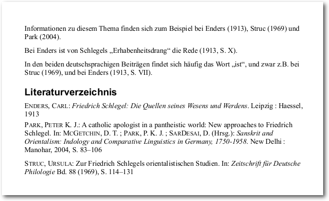Ergebnis des zweiten Beispieldokumentes.
Zusammenfassung
Mit dem schlanken Dokumentenprozessor Pandoc kann man mittels der übersichtlichen vereinfachten Auszeichnungssprache Markdown von der Kommandozeile aus ohne großen Aufwand unter anderem hochwertige PDF-Dokumente erstellen. Dabei verzichtet man zwar auf den Komfort von WYSIWYG, aber dieses programmierähnliche Verfahren hat als offenes System demgegenüber eine Reihe von Vorteilen. Pandoc benutzt normalerweise LaTeX um PDF-Dateien auszugeben, aber es besteht auch die Möglichkeit, den LibreOffice Writer über den Wrapper Unoconv dafür einzusetzen, wobei LibreOffice-Templates eingebunden werden können. Pandoc kann für Quellenverweise auf verschiedene Literaturdatenbank-Formate zugreifen und es besteht dabei die Möglichkeit, CSL-Stylesheets für unterschiedliche Zitierstile zu verwenden. Pandoc steht vor allem durch die Verwendung von CSL mit an der Spitze der derzeitigen Entwicklung, aber es gibt auch noch einige Nachteile gegenüber alternativen, Editor-basierten Systemen wie LaTeX, wie z. B. die automatische Silbentrennung oder PDF-Metadaten. Aber Pandoc genießt eine große Popularität und wird zur Zeit laufend weiterentwickelt. Links[1] https://de.wikipedia.org/wiki/LaTeX
[2] https://de.wikipedia.org/wiki/Libreoffice
[3] https://de.wikipedia.org/wiki/Patch_(Unix)
[4] https://de.wikipedia.org/wiki/Versionsverwaltung
[5] https://de.wikipedia.org/wiki/Epub
[6] https://en.wikipedia.org/wiki/Lightweight_markup_languages
[7] https://de.wikipedia.org/wiki/Markdown
[8] https://de.wikipedia.org/wiki/ReStructuredText
[9] http://johnmacfarlane.net/pandoc
[10] http://johnmacfarlane.net/pandoc/releases.html
[11] https://de.wikipedia.org/wiki/Haskell_(Programmiersprache)
[12] http://hackage.haskell.org/package/pandoc
[13] http://jblevins.org/projects/markdown-mode
[14] http://johnmacfarlane.net/pandoc/README.html#pandocs-markdown
[15] http://markdown.de/syntax
[16] https://de.wikipedia.org/wiki/Fußnote
[17] http://johnmacfarlane.net/pandoc/README.html#footnotes
[18] http://rst2pdf.ralsina.com.ar/
[19] http://www.reportlab.com/software/opensource/rl-toolkit
[20] http://johnmacfarlane.net/pandoc/README.html#creating-a-pdf
[21] http://johnmacfarlane.net/pandoc/README.html#non-pandoc-extensions
[22] http://dag.wieers.com/home-made/unoconv
[23] https://de.wikipedia.org/wiki/Literaturnachweis
[24] http://johnmacfarlane.net/pandoc/README.html#citations
[25] https://de.wikipedia.org/wiki/EndNote
[26] https://de.wikipedia.org/wiki/RIS_(Dateiformat)
[27] https://de.wikipedia.org/wiki/Metadata_Object_Description_Schema
[28] https://de.wikipedia.org/wiki/Bibtex
[29] http://jabref.sourceforge.net
[30] https://de.wikipedia.org/wiki/Citation_Style_Language
[31] http://citationstyles.org/documentation
[32] https://de.wikipedia.org/wiki/Zotero
[33] http://zotero.org/styles
[34] https://de.wikipedia.org/wiki/DIN_1505-2
| Autoreninformation |
| Daniel Stender (Webseite) hat einen Magister in klassischer Indologie, pflegt Pakete für Debian und entwickelt im Bereich Digital Humanities. |
Diesen Artikel kommentieren
Zum Index
Humble Indie Bundle 8
von Dominik Wagenführ Das Humble Indie Bundle [1] gibt es bereits seit 2010. In unregelmäßigen Abständen werden Spielepacks veröffentlicht, deren Inhalt unter den großen Betriebssystemen Linux, Mac und Windows läuft und DRM-frei ist. Von Ende Mai bis Anfang Juni gibt es wieder so eine Aktion.Hintergrund
Seit dem 28. Mai 2013 kann man das neue Humble Indie Bundle 8 kaufen. Wie bei allen Humble Bundles sind die Spiele DRM-frei und laufen unter Linux, Mac und Windows. Jeder kann den Preis selbst bestimmen und in variablen Anteilen auf die Entwicklerstudios, die Humble-Anbieter, die Electronic Frontier Foundation [2] und die Charity-Organisation Child's Play [3] verteilen.Die Humble Webseite.
Sieben Spiele als Linux-Debut
Dear Esther
„Dear Esther“ [4] ist kein typisches Videospiel sondern eher eine Erfahrung. In der Ich-Perspektive erkundet man ohne Gedächtnis eine einsame Insel, auf der in der Ferne ein geheimnisvoller Leuchtturm blinkt. Stück für Stück findet man Gegenstände, die man zusammenpuzzeln muss, um hinter das Geheimnis der Insel und der eigenen Identität zu kommen. Das Spiel hat zahlreiche Preise gewonnen, u. a. in den Kategorien „Beste Erzählweise“ und „Visual Art“.Dear Esther.
Hinweis: „Dear Esther“ existiert derzeit nur als CodeWeaver-Portierung, d. h. als Windows-Spiel, das mit einem Wine-Wrapper ausgeliefert wird. Eine native Portierung ist aber bereits in Arbeit [5].
Thomas Was Alone
„Thomas Was Alone“ [6] ist ein Spiel über Freundschaft in einem andersartigen Design. Als kleines Rechteck bahnt man sich in dem Jump'n'Run-Geschicklichkeitsspiel anfangs alleine seinen Weg durch die Welt, um später neue Freunde zu gewinnen, die einem bei dem Abenteuer helfen. Jedes Level wird durch eine freundliche Stimme eingeleitet, die einen Anfangs ohne künstlichen Aufsatz in die Spielmechanik einführt. Die Verbindung zwischen Geschichte und Spieleinführung ist sehr gut gelungen. 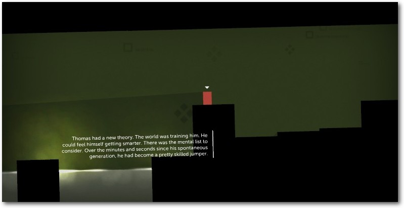Thomas Was Alone.
Capsized
„Capsized“ [7] ist ein grafisch sehr schönes Action-Jump'n'Run. Als gestrandeter Astronaut auf einem fremden Planeten versucht man in der einem feindlich gesonnenen Umwelt zu überleben und die eigenen Crew-Mitglieder zu retten. Zur Verteidigung besitzt man natürlich zahlreiche Waffen und eine Art Gravity-Hook, mit dem man sich selbst z. B. über Abgründe schwingen oder auch andere Gegenstände greifen und bewegen kann. Mit einem Jetpack ausgerüstet kann man auch höher gelegenen Ebenen finden. In jedem Level gibt es auch Geheimverstecke und Boni.Capsized.
Awesomenauts
„Awesomenauts“ [8] ist ein sehr bunter 2D-Jump'n'Run-Shooter im Comicstil. Mehrere Helden mit verschiedenen Fähigkeiten und eigenem Teamsong stehen zur Auswahl. Zusätzlich gibt es einen Multiplayer-Modus.Awesomenauts.
Little Inferno
Den Stil von „Little Inferno“ [9] erkennt man als World-of-Goo-Spieler sofort wieder (siehe freiesMagazin 03/2009 [10]). Dieses Mal sprüht das Herz jedes Pyromanikers Funken, wenn er das Spiel sieht: Einziges Ziel des Spiels ist es, Gegenstände in einem Kamin zu verbrennen. Hierfür bekommt man Geld, für das man sich tolle neue Sachen kaufen kann – um sie dann wieder zu verbrennen. 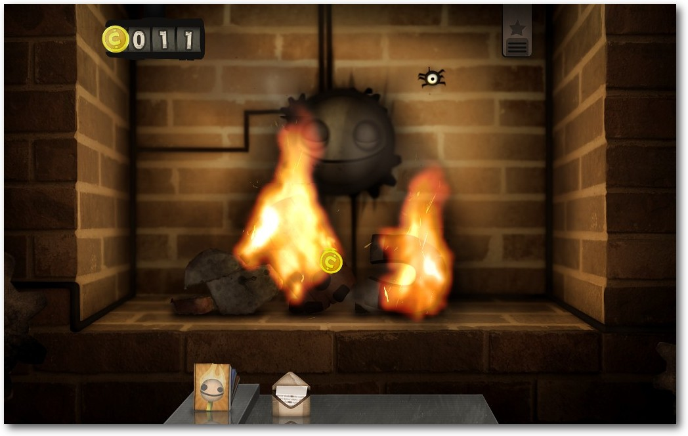Little Inferno.
Proteus
Wer mehr als den Durchschnitt zahlt, bekommt „Proteus“ [11] dazu. Das Spiel zeigt eindrucksvoll, wie man mit Pixelgrafik wundervolle Welten erschaffen kann. Zusammen mit einem großartigen Soundtrack kann man sich leicht in den zufallsgenerierten Welten verlieren. Das Spiel konnte einige Preise gewinnen, u. a. für „Best Audio“ und „Most Amazing Game“. Ein direktes Spielziel erkennt man aber auf Anhieb nicht. 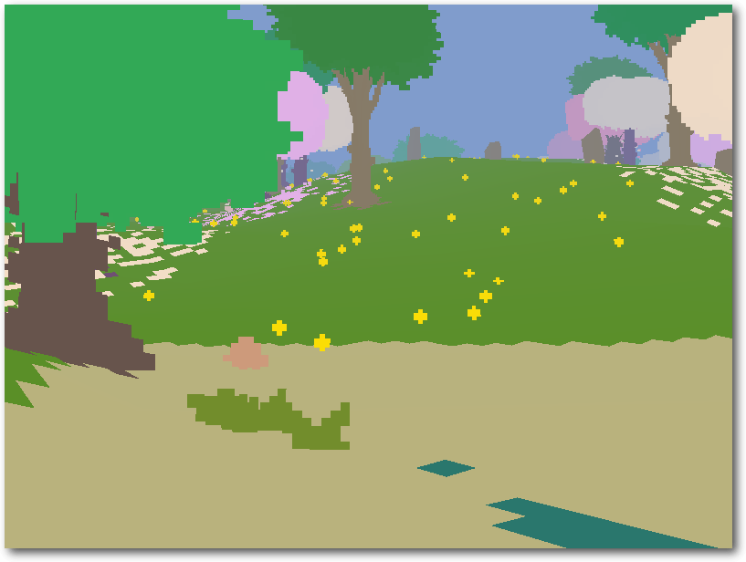Proteus.
Hotline Miami
Ebenso gibt es „Hotline Miami“ [12] dazu, wenn man mehr als der Durchschnitt bezahlt. Es handelt sich dabei um einen sehr schnellen strategischen Top-Down-Shooter, bei dem man nur wenige Millisekunden Zeit hat, zu reagieren. Zum falschen Zeitpunkt die falsche Taste gedrückt und man darf von vorne anfangen. Frustration und Motivation geben sich hier die Klinke in die Hand. 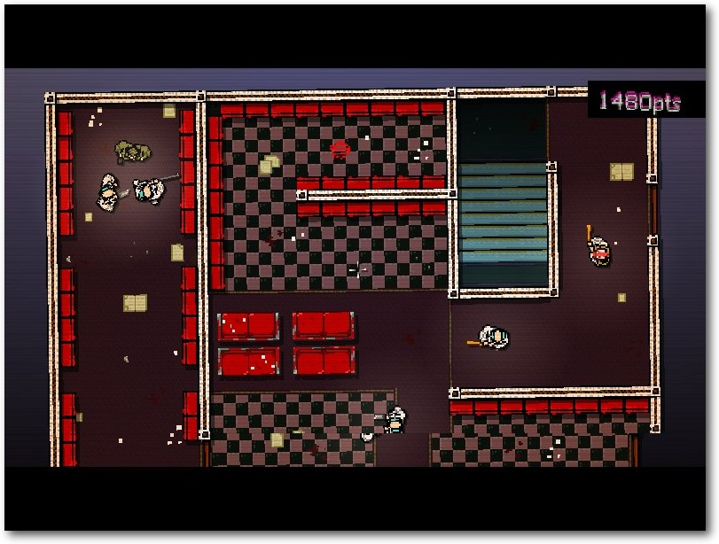Hotline Miami.
Soundtrack und Sprache
Zusätzlich gibt es zu den Spielen „Dear Esther“, „Thomas Was Alone“, „Capsized“, „Awesomenauts“, „Little Inferno“ und „Proteus“ den jeweiligen Soundtrack als MP3 und verlustloses FLAC zum Download. Die Sprache [13] der meisten Spiele ist Englisch, einzig „Hotline Miami“ und „Little Inferno“ beim Direktdownload bzw. „Little Inferno“ und „Awesomenauts“ unter Steam stehen in Deutsch zur Verfügung. Hinweis: Alle Spiele liegen nur als 32-Bit-Version vor. Zur Benutzung auf 64-Bit-Systemen benötigt man unter Umständen die 32-Bit-Bibliotheken ia32-libs.Bundle erwerben
Die Spiele stehen nach dem Kauf für Linux als Direkt-Download oder BitTorrent-Link zur Verfügung. Zusätzlich können die Spiele auch über das Ubuntu-Software-Center installiert werden. Ebenso gibt es für alle Spiele Steam-Keys. Bezahlen kann man über Paypal, Google Wallet oder Amazon Payments. Ganz neu im achten Bundle ist die Bezahlung mit Bitcoins [14]. Das Angebot besteht noch bis zum 11. Juni 2013. Einige der Spiele können danach auf den Webseiten der Entwickler oder in Steam gekauft werden. Hinweis: Vor dem Kauf sollte man zu allen Spielen die Systemvoraussetzung für Linux lesen [15]. Links[1] http://www.humblebundle.com/
[2] http://www.eff.org/
[3] http://www.childsplaycharity.org/
[4] http://dear-esther.com/
[5] http://support.humblebundle.com/customer/portal/articles/1161428-dear-esther-linux-issues
[6] http://www.thomaswasalone.com/
[7] http://www.capsizedgame.com/
[8] http://www.awesomenauts.com/
[9] http://tomorrowcorporation.com/littleinferno
[10] http://www.freiesmagazin.de/freiesMagazin-2009-03
[11] http://www.visitproteus.com/
[12] http://hotlinemiami.com/
[13] http://support.humblebundle.com/customer/portal/articles/1162704-humble-indie-bundle-8-available-languages
[14] https://de.wikipedia.org/wiki/Bitcoin
[15] http://support.humblebundle.com/customer/portal/articles/1156426-humble-indie-bundle-8-system-requirements
| Autoreninformation |
| Dominik Wagenführ (Webseite) spielt sehr gerne und die Humble Bundles sind so gut wie immer ein Pflichtkauf für ihn, auch wenn er selten mit dem Spielen hinterherkommt. |
Diesen Artikel kommentieren
Zum Index
Raspberry Pi
von Werner Ziegelwanger Der Raspberry Pi ist laut Wikipedia [1] ein kreditkartengroßer „Einplatinen-Computer“. Diese Beschreibung ist keineswegs übertrieben, sondern sogar wörtlich zu nehmen. Der Raspberry Pi ist ein vollwertiger Computer in der Größe einer üblichen Scheckkarte. Auf den ersten Blick wirkt der Pi wie etwas für Bastler, schließlich schaut er doch eher nackt aus. Das Tolle ist: Er ist sowohl unproblematisch für Laien als auch das Gerät für jeden Bastler. Man kann ihn ganz schnell und unkompliziert in Betrieb nehmen und im Internet surfen, oder aber man schreibt dafür Software, steuert externe Geräte oder lässt einen Roboter laufen. Diese Vielseitigkeit und gleichzeitige Einfachheit ist sein Erfolgsrezept. 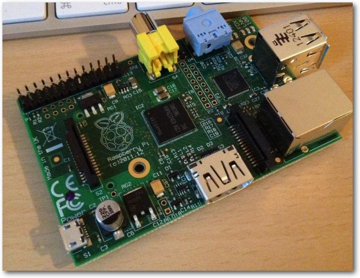Der Raspberry Pi.
Den Pi gibt es aktuell in zwei Ausführungen: eine mit 256 MB RAM (Modell A) und eine mit 512 MB RAM (Modell B). Alle weiteren Details und Bilder in diesem Artikel beziehen sich auf das Modell B.
Geschichte
Der Raspberry Pi geht auf einen Prototypen aus dem Jahr 2006 zurück. Ziel der Entwicklung war ein kleiner und günstiger Computer für britische Schüler. Man rechnete mit einem Verkauf von rund 1000 Stück. Die Raspberry Pi Foundation [2] (eine gemeinnützige Organisation) hatte ursprünglich vor, Jugendlichen das Programmieren-Lernen zu erleichtern. Schnell kam man aber auf die Idee, dass man am besten mit einem preisgünstigen Computer helfen kann. Sechs Jahre nach der ersten Idee erreichte der Hype um den Raspberry Pi seinen Höhepunkt. Anfang 2013 teilte die Raspberry Pi Foundation mit, dass bereits eine Million Pis verkauft wurden.Komponenten
Auf der Platine sind alle Komponenten eines Computers untergebracht. Das Herz des Raspberry Pis ist seine CPU. Die Recheneinheit des Pis ist ein ARM1176JZF-S-Prozessor. Dieser wird ab Werk mit 700 MHz getaktet. ARM-Prozessoren [3] kennt man von mobilen Geräten wie Handys oder Tablets. Sie sind sehr stromsparend und brauchen vor allem keine aktive Kühlung. Für die grafischen Berechnungen sorgt die GPU. Hier kommt ein Broadcom VideoCore-IV-Grafikkoprozessor zum Einsatz. Dieser ist so leistungsstark, dass man ein Full-HD-Signal ohne Ruckeln darstellen kann. Es wird OpenGL ES 2.0 unterstützt. Man kann damit 3-D-Spiele laufen lassen wie zum Beispiel Quake 3. Der nächste wichtige Bestandteil ist der Hauptspeicher. Es stehen 512 MB zur Verfügung, die aber mit der GPU geteilt werden müssen. Üblicherweise verwendet diese davon 64 MB. Der Arbeitsspeicher ist nicht groß, aber ausreichend. Der große Unterschied des Raspberry Pis gegenüber vielen anderen Einplatinen-Computer sind seine Anschlüsse: Es gibt zwei USB-2.0-Steckplätze, die heute jeder PC oder Laptop auch hat. An die USB-Anschlüsse sollte man nur passive Geräte anstecken. Geräte, die zu viel Strom benötigen, funktionieren ohne eigene Stromversorgung nicht richtig (z. B. externe Festplatten). Der Raspberry hat auch einen 10/100-MBit-Ethernet-Netzwerkanschluss. Für die Ausgabe von Ton gibt es einen 3,5mm-Klinkenanschluss (normaler Kopfhörer-Anschluss). Für die Videoausgabe gibt es zwei Möglichkeiten, entweder über HDMI [4] oder über einen FBAS (gelber Cinch-Anschluss). Für Bastler gibt es auch eine eigene Schnittstelle. Diese hat 16 Pins, die man selbst mit Programmen ansteuern kann. Zu guter Letzt sei noch der SD-Kartenslot erwähnt. Die Stromversorgung läuft beim Raspberry über einen Micro-USB-Stecker. So kann man ihn mit heutigen Handyladekabeln an das Stromnetz anschließen. Der Raspberry benötigt 5V mit 700mA, das sind 3,5 Watt. Techniker vermissen eventuell ein paar Dinge, die ein üblicher PC hat. Der Raspberry Pi hat keinen Zeitgeber, also keine interne Uhr. Die Uhrzeit holt er sich normalerweise über das Netzwerk, vergisst diese jedoch bei Stromverlust. Außerdem gibt es kein Speichermedium. Dafür gibt es an der Unterseite einen SD-Kartenschacht. Dort kann man eine SD-Karte mit einem Speicher von 2 GB oder mehr einstecken. Von dort wird das Betriebssystem gebootet und dort kann man auch (so wie auf einer Festplatte) Daten speichern. Als Betriebssystem verwendet man üblicherweise Linux. Raspbian [5] basiert auf Debian und ist die Standarddistribution für den Raspberry Pi. Man kann jedoch auch jedes andere für ARM kompilierte Linux installieren. Tatsächlich erlaubt der Raspberry auch das Programmieren eines eigenen Betriebssystems. Das kann man durch einfachen Tausch der SD-Karte testen. Wer gerne sein eigenes Betriebssystem schreiben will, kann sich dazu einen Kurs der Cambridge Universität [6] ansehen. Dort wird der Raspberry Pi im Unterricht verwendet. 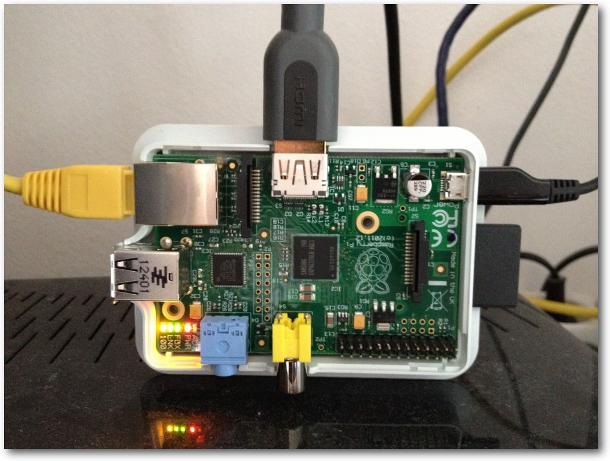Der Raspberry Pi in einem Case mit angestecktem LAN- und HDMI-Kabel.
System
Wer nun Lust bekommen hat und auch einen Raspberry Pi benötigt, findet auf der offiziellen Homepage [7] auch Links zu Verkäufern. Diese Webseite ist auch der Anlaufpunkt Nummer 1 für den Pi. Dort wird auch Raspian als Image zum Download angeboten [8]. Die aktuelle Version heißt „wheezy“ und basiert auf Debian. Nur wie installiert man diese?Installation
Im Grunde ist die Installation einfach. Man muss lediglich das Image auf eine SD-Karte kopieren. Wichtig ist, dass dieses auch bootbar bleibt. Aus diesem Grund benötigt man hierfür das Programm dd. Der Transfer auf die SD-Karte kann wie folgt aussehen:$ dd bs=1M if=raspbian_wheezy.img of=/dev/sdX
Wobei hier das X bei sdX mit der Nummer der SD-Karte ersetzt werden muss.
Der Rest der Installation ist trivial. Man muss lediglich die SD-Karte in den
Raspberry Pi einsetzen und ihn mit Strom versorgen.
Programme
Nach dem ersten Bootvorgang startet das wichtigste Programm des Pis, sein Konfigurationsprogramm raspi_config. Dieses kann jederzeit von der Konsole aus gestartet werden. 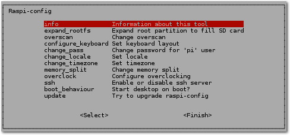raspi_config-Einstellungen.
Folgende Dinge kann man hier einstellen:
- „expand_rootfs“:
- Hat man eine SD-Karte mit mehr als 2 GB Speicher, so sollte man hier das Filesystem auf den vollen Speicher ausdehnen, denn egal wie groß der Speicher ist, das Image verwendet ohne Konfiguration nur 2 GB.
- „configure_keyboard“:
- Hier sollte man das Tastaturlayout auf Deutsch setzen, da nach der Installation Englisch eingestellt ist.
- „change_pass“:
- Voreingestellt ist ein Benutzer mit dem Benutzernamen „pi“ und dem Passwort „raspberry“. Hier sollte man unbedingt das Passwort ändern!
- „change_locale“ und „change_timezone“:
- Mit diesen beiden Einstellungen setzt man Ort und Zeitzone.
- „overclock“:
- Den Prozessor des Raspberry Pis kann man übertakten. Werte bis zu 1 GHz sind möglich. Man sollte dabei aber sehr vorsichtig sein!
- „ssh“:
- Hier kann man den SSH-Zugriff erlauben, um sich über das Netzwerk an der Konsole anzumelden. Der Raspberry Pi eignet sich sehr gut für Controller-Aufgaben und benötigt dafür weder Eingabegeräte noch eine Bildschirmausgabe.
- „boot_behaviour“:
- Zuletzt kann man noch festlegen, ob im Konsolenmodus oder direkt im grafischen Modus gestartet werden soll. Alle anderen Programme von Raspbian sollten Debian-Benutzern bereits bekannt sein. Es ist hier nur wichtig zu erwähnen, dass aufgrund des kleinen Images nur wenige davon installiert sind. Man kann aber einfach Programme über den Paketmanager nachinstallieren.
Store
Seit einigen Monaten gibt es auch einen eigenen Raspberry Pi Store [9]. Dort werden Programme angeboten, welche speziell für den Raspberry Pi entwickelt, kompiliert oder konfiguriert wurden. Viele davon sind gratis. Die grafische Oberfläche hat in den neueren Versionen des Images bereits ein Desktop-Icon für den Store.Netzwerk/Internet
Die wohl wichtigste Komponente des Raspberry Pis ist meiner Meinung nach seine Netzwerkschnittstelle. Diese ist standardmäßig so konfiguriert, dass sie über DHCP vom Router eine IP-Adresse bezieht. Das passt perfekt, wenn man den Pi beispielsweise über ein LAN-Kabel direkt an den Router ansteckt. Mit aktiviertem SSH ist der Pi nun über seine IP-Adresse von allen anderen Rechnern über:$ ssh pi@192.168.1.2
erreichbar. Diese Beispiel-IP-Adresse muss natürlich mit jener des Pis ausgetauscht
werden.
Will man den Raspberry Pi etwas „mobiler“ verwenden, dann benötigt man einen
WLAN-Stick. Es ist sehr wichtig, sich zuerst zu informieren, welche WLAN-Sticks
vom Raspberry Pi unterstützt werden, denn sonst artet die
Inbetriebnahme in
endlose Treiberinstallationen aus. Ein guter WLAN-Stick ist der von der Firma
EDIMAX. Die Konfiguration des Sticks selbst ist sehr einfach, da am Desktop des
grafischen Modus bereits eine Verknüpfung zum WiFi-Tool liegt. Damit ist der Pi
in zwei Minuten im Netz.
Zum Internetsurfen liefert der Pi den Browser Midori [10]
mit. Dieser
ist nicht sehr performant, dafür aber leichtgewichtig, und wird von Webseiten üblicherweise als mobiler
Browser erkannt. Allerdings versteht dieser weder HTML5 noch Flash, daher kann man u. a.
keine Videos abspielen.
Mediencenter
Eine der genialsten Anwendungen für den Raspberry Pi ist die Verwendung als Mediencenter. Da der Pi in Echtzeit Full-HD-Signale verarbeiten und am HDMI-Ausgang ausgeben kann, ist er das ideale Werkzeug dafür. Im Gegensatz zu anderen Mediencentern im Handel ist der Pi geschenkt. Doch wie verwendet man den Pi als Mediencenter? Dafür gibt es das XBMC-Mediencenter [11], welches schon sehr bald auf den Pi portiert wurde und vollständig konfiguriert als minimales Netzwerkimage zur Installation vorliegt. Dieser Port ist unter dem Namen Raspbmc [12] bekannt.Raspbmc-Installation
Auf der Homepage gibt es diverse Images zum Download [13]. Zu bevorzugen ist das minimale Netzwerkimage. Dieses kopiert man, wie schon beschrieben mit dd, auf die SD-Karte und steckt diese dann in den Raspberry Pi, welcher über das LAN-Kabel mit dem Internet verbunden ist. Danach startet man den Pi und das Mediencenter wird in ca. 15 bis 20 Minuten automatisch installiert und konfiguriert. Ich habe mein Mediencenter so konfiguriert, dass der Raspberry Pi mit dem HDMI-Anschluss am Fernseher und über das LAN-Kabel mit dem lokalen Netzwerk verbunden ist. Über das Netzwerk kann man am Fernseher Videos und Bilder ansehen oder Musik hören. Ein besonderes Feature des XBMC-Mediencenters ist, dass es auch mit einer Fernbedienung steuerbar ist. Hierzu kann man eine normale Infrarot-Fernbedienung verwenden, jedoch muss dazu der angeschlossene Fernseher den CEC-Standard [14] erfüllen. Eine Möglichkeit, die unabhängig vom TV-Gerät funktioniert, ist die Verwendung eines Smartphones als Fernbedienung. Die offizielle XBMC-Remote-App gibt es für das iPhone oder iPad [15] oder für Android [16] Geräte. Die offizielle App ist gratis. Es gibt aber auch einige ähnliche Apps zu kaufen. Wenn Smartphone oder Tablet im selben Netzwerk (WLAN) hängen, kann man damit das Mediencenter sogar über größere Entfernung steuern. Ein Webinterface ermöglicht auch die Steuerung über das Internet. Somit könnte man von jedem Punkt in der Welt die eigene Wiedergabeliste steuern.Anwendungen
Der Raspberry Pi kann noch sehr viel mehr.Webserver
Ein schöner Anwendungsfall für den Pi ist ein LAMP-Webserver [17]. Dafür installiert man nachträglich MySQL als Datenbank, Apache als Webserver und PHP zum Ausführen von PHP-Skripten. Diese Installation und Konfiguration sollte eher trivial sein und wird hier nicht näher beschrieben. Das größte Problem für die Nutzung als Webserver ist hier ganz klar der Arbeitsspeicher. Mit 512 MB ist man weit davon entfernt, was ein normaler Server haben sollte. Man kann ihn aber sehr gut für einfache Dinge benutzen. Man könnte zum Beispiel täglich Skripte über Cron aufrufen lassen, die bestimmte Werte auslesen (z. B. aus dem Internet, von angeschlossenen Messinstrumenten oder anderen Datenquellen). Diese Werte könnte man in einer Datenbank speichern und über eine Weboberfläche mit dem Apache grafisch ausgeben. Auf diese Art und Weise könnte man den Pi auch zur Steuerung und Regelung anhand verschiedener Werte im eigenen Haus benutzen. Man denke hier zum Beispiel an einen Temperatursensor, der Außen- und Innentemperaturen abfragt, auswertet und eventuell Klimaanlage oder Heizung steuert.Retro
Manche ältere Leser wird der Raspberry Pi an Computer aus den 80er Jahren erinnern. Man denke hier nur an einen Apple II [18]. Damals waren Computer noch Rechner mit maximal einer Tastatur, ohne Speichermedium und lediglich einem Diskettenlaufwerk. Außerdem steckte man diese am Bildschirm oder Fernseher an, welche nicht beim Kauf dabei waren. Damals erlaubten diese Computer noch das Basteln und kamen oft mit umfangreicher technischer Anleitung. Dieser Retro-Flair wird vor allem dann deutlich, wenn man selbst am Raspberry Pi Emulatoren für alte Spiele installiert. 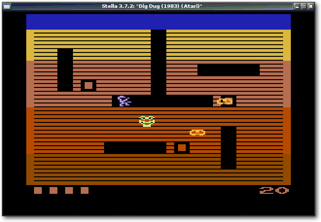Das Spiel „Dig Dug“ im Atari2600-Emulator.
Ein anderer, den meisten vermutlich bekannter Emulator ist DOSBox [19]. Damit lassen sich noch nicht ganz so alte Programme ausführen. 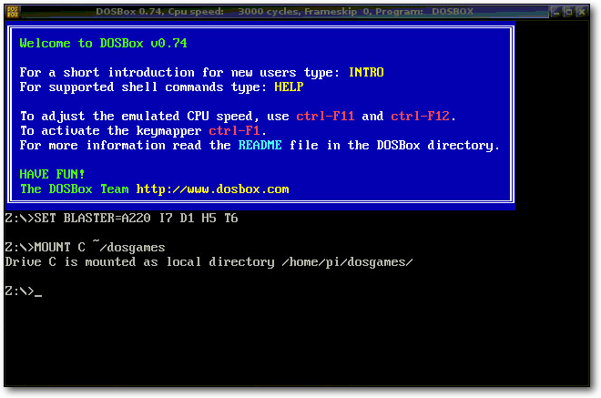
DOSBox gestartet unter Raspbian.
Visualisierungen
Nachdem der Raspberry Pi durch seine Hardware sowohl Full-HD-Signalbearbeitung als auch OpenGL ES 2.0 erlaubt, kann man ihn perfekt dafür benutzen, schnell und einfach eine grafische Ausgabe zu erzeugen. Man denke hier an Visualisierungen auf einer Messe oder einfach um irgendwo in einem Warteraum eine Ausgabe auf einen Fernseher zu bringen. Als Referenz bei Grafikkarten-Benchmarks dient oft Quake III Arena [20]. Also warum sollte man nicht auch hier Quake 3 probieren? Das ist vor allem deshalb möglich, da die Quake-3-Engine Open Source ist. 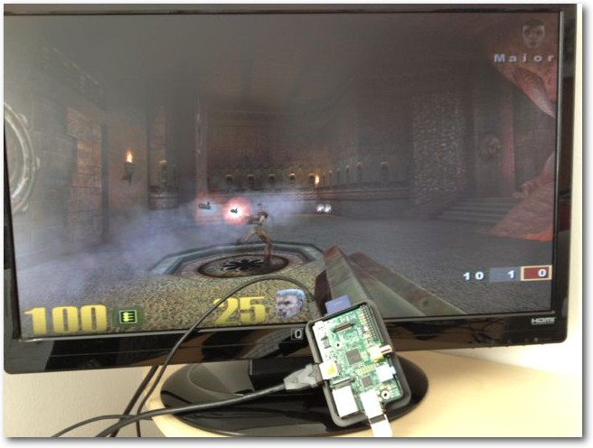Quake 3 läuft am Raspberry Pi flüssig.
Quake 3 kann nicht einfach heruntergeladen und installiert werden. Es muss zuerst (für den ARM-Prozessor) kompiliert werden. Dies ist etwas komplizierter und dauert auch gut und gern eine Stunde [21].
Game-Server
Selbst als Game-Server kann man den Raspberry Pi verwenden. Beispiele dafür sind der Minecraft- [22] oder auch der FreeCiv-Server [23]. Hier sollte man jedoch nicht zu viel erwarten. Für ein kleines Spiel mit Freunden reicht es gerade noch, aber als Minecraft-Server mit tausenden Spielern reichen RAM und Rechenkapazität einfach nicht aus. Bei fünf bis zehn Spielern ist Schluss! Für rundenbasierte Spiele wie FreeCiv ist der Raspberry Pi aber ideal. 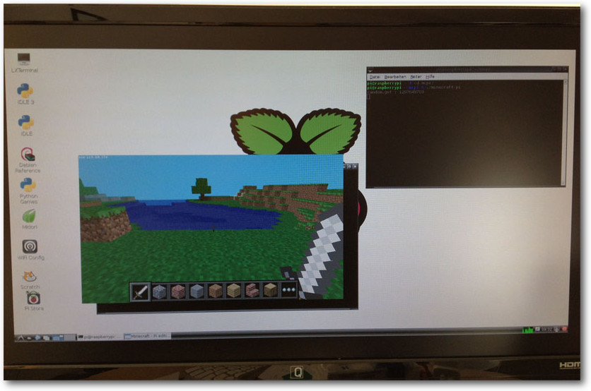Minecraft Pi Edition unter Raspbian ausgeführt.
Python-Programmierumgebung
Man darf nicht vergessen, dass der Pi konzipiert wurde, um Programmieren zu lernen. Dafür hat der Pi standardmäßig eine Programmierumgebung für Python installiert. Im Internet sind dazu auch Tutorials zu finden, um einen einfachen Einstieg zu haben. Mit Python kann man beispielsweise auch die 16 Pins ansprechen. Dort kann man eigene Hardware anstecken wie Temperatursensoren, LC-Displays, usw. Leser, die sich ein wenig mit Elektrotechnik auskennen, fühlen sich hier vermutlich wohler. Ein sehr guter Blog zu diesem Thema ist von adafruit industries [24].Probleme/Kritik
Der Raspberry Pi ist an sich ein tolles Gerät. Man sollte sich aber vor dem Kauf überlegen, ob man sich wirklich einen zulegen möchte. Man muss selbst auch ein wenig Zeit investieren. Der Pi ist als PC nur schlecht zu gebrauchen. Man kann im Internet surfen, E-Mails abrufen, man kann sogar LibreOffice installieren und damit arbeiten. Aber: alles eher langsam und nur sehr begrenzt. Der Pi verwendet als Speichermedium eine SD-Karte und diese kann man von vornherein schon nicht endlos überschreiben. Die Stromversorgung ist ein weiteres Problem. Der Pi verbraucht nur 3,5 Watt, also bei derzeitigen Stromkosten keine 10 € im Jahr (bei Dauerbetrieb). Die 3,5 Watt sind aber für Peripheriegeräte zuwenig. Eine Maus und eine Tastatur können gerade noch betrieben werden (mit Problemen), externe Festplatten ohne eigene Stromversorgung funktionieren nicht! Sollte man auf USB-Geräte angewiesen sein, sollte man sich unbedingt einen USB-Hub mit eigener Stromversorgung zulegen. Wie man am Stromproblem sieht, benötigt man schnell mehr Geräte. So braucht man immer mehr Kabel und endet in einem kompletten Chaos. Ich persönlich verwende meinen Pi entweder als XBMC-Mediencenter (angesteckt am Router über LAN-Kabel, HDMI am Fernseher und am Stromnetz) oder als Rechner im Netz (mit Strom und WLAN-Stick). Alles andere ist meiner Meinung nach nur zum Testen geeignet und nicht für den laufenden Betrieb. Links[1] https://de.wikipedia.org/wiki/Raspberry_Pi
[2] http://www.raspberrypi.org/about
[3] https://de.wikipedia.org/wiki/ARM-Architektur
[4] https://de.wikipedia.org/wiki/HDMI
[5] http://www.raspbian.org/
[6] http://www.cl.cam.ac.uk/freshers/raspberrypi/tutorials/os/
[7] http://www.raspberrypi.org/
[8] http://www.raspberrypi.org/downloads
[9] http://store.raspberrypi.com/projects
[10] http://midoribrowser.org/
[11] http://xbmc.org/about/
[12] http://www.raspbmc.com/
[13] http://www.raspbmc.com/download/
[14] http://wiki.xbmc.org/index.php?title=CEC
[15] https://itunes.apple.com/de/app/official-xbmc-remote/id520480364?mt=8
[16] https://play.google.com/store/apps/details?id=org.xbmc.android.remote&hl=de
[17] https://de.wikipedia.org/wiki/LAMP_(Softwarepaket)
[18] https://de.wikipedia.org/wiki/Apple_II
[19] http://www.dosbox.com/
[20] https://de.wikipedia.org/wiki/Quake_III_Arena
[21] http://developer-blog.net/hardware/quake-3-am-raspberry-pi/
[22] https://minecraft.net/
[23] http://www.freeciv.org/
[24] http://www.adafruit.com/blog/category/raspberry-pi/
| Autoreninformation |
| Werner Ziegelwanger (Webseite) hat Game Engineering und Simulation studiert und arbeitet derzeit als selbstständiger Software-Entwickler. Schon während seiner Ausbildung beschäftigte er sich immer wieder mit Open-Source-Programmen und Linux-Distributionen. |
Diesen Artikel kommentieren
Zum Index
Raspberry Pi als Multimedia-Zentrale
von Mirko Lindner Es vergeht kaum eine Woche, in der Hersteller von Fernsehern, Multimedia-Geräten oder Anbieter von Diensten nicht irgendeine Neuerung vorstellen. Wer nicht gerade zum erlesenen Kreis der Multimillionäre gehört, verzichtet dankend oder ärgert sich womöglich. Doch das muss nicht sein, denn der preiswerte Winzling „Raspberry Pi“ [1] erlaubt es, mit geringsten finanziellen Mitteln ein Multimedia-Gerät aufzusetzen, das sich hinter weit teureren Lösungen nicht zu verstecken braucht. Der Artikel zeigt, wie man eine persönliche, moderne Multimedia-Zentrale samt einer Fernbedienungssteuerung und einer Display-Anzeige für nicht einmal 50 Euro realisieren kann. Redaktioneller Hinweis: Der Artikel „Raspberry Pi als Multimedia-Zentrale“ erschien erstmals bei Pro-Linux [2].Einleitung
Der Raspberry Pi ist eine außerordentliche Erfolgsgeschichte – Linux und Python machten es möglich. Über eine Million Exemplare des – je nach Ausstattung – 24 oder 33 Euro kostenden Mini-Rechners sollen bereits verkauft worden sein und fast täglich gibt es neue Erfolgsgeschichten, was kreative Bastler mit den Rechnern alles ersinnen. Zuletzt stellte der Hersteller ein neues Kameramodul vor [3], das den Einsatzbereich des Kleinstrechners noch weiter vergrößern dürfte. Dabei wurde der ARM-basierte Mini-Rechner ursprünglich ersonnen, um der neuen Generation die Grundprinzipien von Computern und Programmierung nahezubringen [4]. Eine Rolle, die in den frühen 1980er-Jahren die 8-Bit-Mikrocomputer erfüllten und die seit einigen Jahren von keinem System mehr ausgefüllt werden konnte. Das Projekt hat hier noch riesiges Potenzial und könnte dabei äußerst erfolgreich sein. Nicht minder verantwortlich für die Verbreitung des Raspberry Pi ist neben dem Preis auch Hardware und das Design. Die Platine enthält im Wesentlichen das Ein-Chip-System BCM 2835 von Broadcom mit dem 700-MHz-Hauptprozessor ARM1176JZF-S, der sich mühelos auf 1 GHz hochtakten lässt. Ein Wermutstropfen bleibt, denn die Spezifikation des Gerätes ist nicht vollends offen, was unter anderem dazu führt, dass geschlossene Treiber eingesetzt werden müssen. Der ARM11-Prozessor [5] ist mit Broadcoms „VideoCore“-Grafikkoprozessor kombiniert und unterstützt unter anderem OpenGL ES 2. Filme lassen sich zudem in „Full HD“-Auflösung über die eingebaute HDMI-Buchse ausgegeben – eine perfekte Voraussetzung für ein Multimedia-Gerät. Mit der Einführung des zweiten Modells „B“ hat die hinter dem Winzling stehende Raspberry Pi Foundation [6] zudem den Speicher auf 512 MB ausgebaut und dem Gerät zusätzlich neben USB nun auch noch eine Ethernet-Schnittstelle spendiert. Ein Highlight des Mini-Computers, der im Übrigen im Vollbetrieb um die drei Watt verbraucht, stellt die frei programmierbare Schnittstelle namens GPIO (General Purpose Input/Output) dar. Gerade darüber lässt sich eine schier unendliche Anzahl an Geräten, Sensoren oder Gadgets steuern. GPIO erlaubt es zudem, mit relativ preiswerten Mitteln das Gerät um neue Funktionen zu erweitern. Die Schnittstelle stellt auch einen wichtigen Teil des Geräts dar, ermöglicht sie doch unter anderem die Ansteuerung diverser Komponenten. Angetrieben werden kann der Raspberry Pi von einer Vielzahl von Betriebssystemen. Der Anwender kann, wie bei Linux üblich, selbst entscheiden, welches System er einsetzen möchte. Neben einem RISC-OS-basierenden System steht eine Vielzahl weiterer Distributionen zur Auswahl bereit. So bietet beispielsweise die Raspberry Pi Foundation direkt auf ihrer Seite neben einer optimierten Version von Debian „Wheezy“ (namens Raspbian [7]) auch eine weitere Abwandlung von Wheezy und eine Arch-Linux-Version an. Zusätzlich stehen zahlreiche Pakete von unabhängigen Projekten zum Download bereit. Eine Übersicht über die Einsatzgebiete des Raspberry Pi liefert der Artikel „Raspberry Pi“. 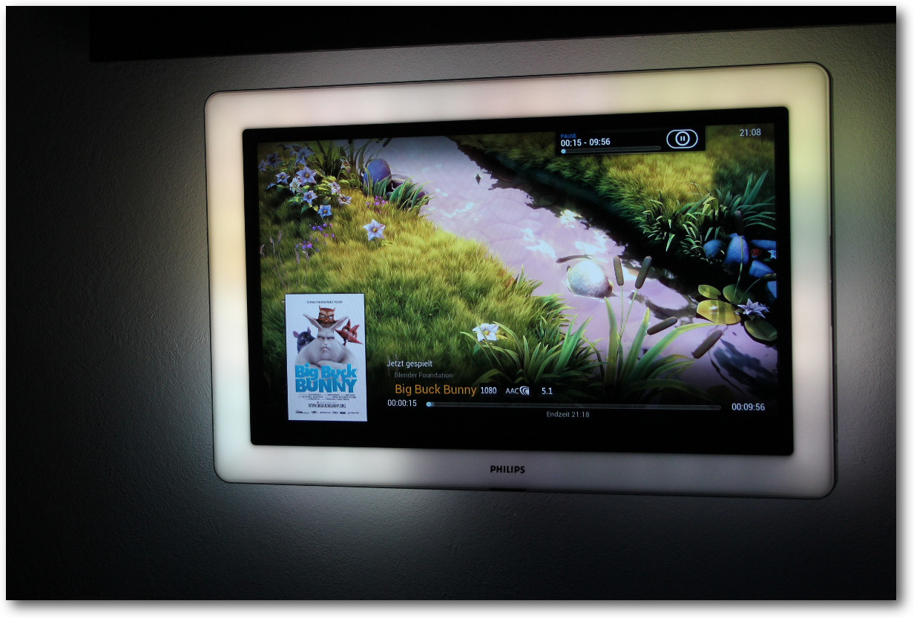Multimediazentrale: Raspberry Pi und XBMC.
Das Multimedia-Problem und die Lösung
Moderne Fernseher, Player oder Multimedia-Geräte verfügen bereits von Hause aus über eine beachtenswerte Vielfalt an Funktionen. Die Hersteller scheinen sich förmlich mit der Funktionalität übertrumpfen zu wollen und offerieren teils nützliche, teils unnötige Funktionalität. Doch selten gelingt es einem Produzenten, alle Wünsche des Konsumenten zu erfüllen. Mal ist es die Wiedergabe eines bestimmten Formats, mal die Anzeige einer Seite, die einen ärgern. Gerne würde man oftmals etwas haben, was nur andere anbieten. Sind doch alle Funktionen vorhanden, kommen schon bald unter Umständen Wünsche hinzu, die wahrscheinlich nur den Käufern eines neuen Geräts erfüllt werden. Ein Teufelskreis, aus dem es kein Entkommen zu geben scheint. Der Wunsch nach einem Selbstbau ist deshalb nur legitim, doch scheiterte die Realisierung eines solches Systems oftmals an diversen Hürden. Teils waren die Systeme zu groß, zu langsam oder einfach nur zu unwirtschaftlich. Mit einem knapp 50 Euro teuren Gerät, das zudem im Betrieb nur geringfügig mehr als den Stand-by-Stromverbrauch moderner LCD-Fernseher benötigt, bietet sich eine neue Gelegenheit. Für den Raspberry Pi gibt es gleich mehrere Distributionen [8], die die Einrichtung eines Media-Systems erleichtern. Die beispielsweise für Multimedia optimierten OpenELEC [9], Raspbmc [10] oder XBian [11] basieren auf der freien, multifunktionalen Media-Center-Software XBMC, die ihre Wurzeln auf der Xbox-Spielkonsole hat und sich selbst als klassisches Mediacenter versteht. Die Applikation erlaubt Multimedia-Dateien wie Video-, Bilder- und Audiodateien von DVD, Festplatte, Server oder aus dem Internet wiederzugeben. Gepaart mit einer Plug-in-Schnittstelle ergibt sie eine ergiebige Kombination, die kaum Wünsche offen lässt. Gerade diese Vielseitigkeit ist auch der Grund, die viele Nutzer zu der Anwendung greifen lässt. Kombiniert man das Gerät und XBMC mit kleineren elektronischen Spielereien, sind der Erweiterbarkeit kaum noch Grenzen gesetzt. Dabei bedarf es weder eines großen Geldbeutels noch besonderer Bauteile. Im folgenden Beispiel soll gezeigt werden, wozu der Raspberry Pi imstande ist, ohne dass teure Komponenten eingesetzt werden müssen. Benötigt werden folgende Komponenten:| Benötigte Komponenten | |
| Komponente | ca. Preis |
| Raspberry Pi | 33 Euro |
| Micro USB-Ladegerät 5V | 6 Euro |
| SDHC-Speicherkarte | 5 Euro |
| LCD-Modul | 4 Euro |
| IR-Empfänger | 1 Euro |
Die Steuerung von XBMC kann auch mittels eines mobilen Geräts geschehen – hier ein iPad von Apple.
Linux und XBMC als Schaltzentrale
Es ist wahrlich für einen kundigen Linux-Nutzer kein Problem, den Winzling zu einer Multimedia-Zentrale umzubauen. Dazu ist in der Regel nur eine passende Distribution auszuwählen und auf einer SD-Karte zu installieren – denn booten kann der Raspberry Pi nur von einer solchen Karte. Sowohl das direkte Booten über das Netzwerk als auch über USB werden nicht unterstützt. Für den Artikel wurde sich für die freie OpenELEC-Distribution [9] entschieden. Spezielle Gründe gab es dafür nicht. Dementsprechend kann die Anleitung auch – Systemkenntnis vorausgesetzt – mit anderen Distributionen realisiert werden. Ist das entsprechende Image [12] von der Seite des Projektes heruntergeladen, muss es entpackt und mittels eines Kartenlesers auf einer SD-Karte installiert werden. Ist ein Kartenleser nicht vorhanden, kann das Image unter Umständen auch direkt aus einem laufenden Raspberry Pi installiert werden. Die Anleitung selbst geht allerdings nicht auf diese Möglichkeit ein, sondern setzt die Verfügbarkeit eines Lesers voraus. Dazu wird das heruntergeladene Paket entpackt und das darin enthaltene Skript create_sdcard ausgeführt. Dieses installiert automatisch die Images und richtet das System für die Nutzung von XBMC ein:# tar xfvj OpenELEC-RPi.arm-*.tar.bz2
# cd OpenELEC-RPi.arm-*/
# ./create_sdcard /dev/DEVICENAME
Je nach Karte und der Geschwindigkeit des Lesers hat der Anwender binnen
einer Minute ein voll funktionsfähiges und auf dem Raspberry Pi lauffähiges
System, das bereits zur Wiedergabe der Medien genutzt werden kann. Wichtig
ist allerdings, dass das Gerät bereits beim Start über HDMI an einen Monitor
oder Fernseher angeschlossen wurde, denn standardmäßig prüft der Kernel
diese Verbindung beim Start der Distribution. Man kann diese Funktion
allerdings auch abschalten.
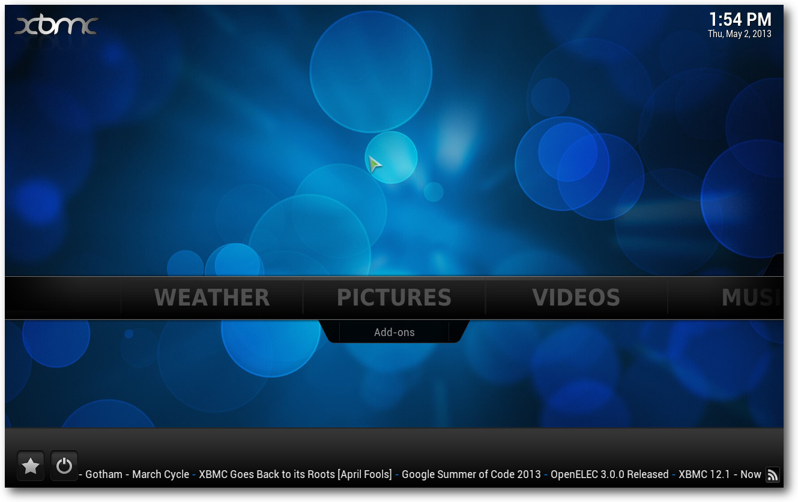# cd OpenELEC-RPi.arm-*/
# ./create_sdcard /dev/DEVICENAME
Startseite von XBMC.
Vor dem Start sollten alle Geräte (WLAN-USB-Adapter, Tastatur, Maus) angesteckt werden. Der Grund: Die Spannung der günstigen Ladegeräte, die als Raspberry-Pi-kompatibel deklariert werden, bricht manchmal beim Einstöpseln eines neuen Geräts ein und verursacht nicht selten einen Absturz des Systems. Sind alle Geräte bereits beim Start angesteckt, tritt das Problem nicht mehr oder erheblich seltener auf.
Steuerung von XMBC
Allgemeines
Ist das System installiert, kann es wahlweise genutzt oder aber einfach nur erforscht werden. Neue Quellen fügt man in XBMC recht einfach über das Menü „Videos -> Dateien -> Videos“ hinzu. Unter „Suchen“ ein Verzeichnis oder eine Netzwerkquelle auswählen, einen Namen eingeben und mit „OK“ bestätigen. Danach unter „Dieser Ordner beinhaltet“ den passenden Typ bestimmen (Musikvideos, TV-Serien, Filme), einen passenden Scraper auswählen (Default: The Movie Database bei Filmen) und alternativ unter „Einstellungen“ die Präferenzen des Scrapers festlegen. Wichtig ist bei dem Schritt die Festlegung des Typs, denn ohne diesen wird weder eine Mediabibliothek erzeugt noch die Medien um zahlreiche Informationen ergänzt. Im Übrigen: Auch das Einbinden von Streaming-Protokollen, wie beispielsweise Universal Plug and Play (UPnP), verhindert die Erzeugung einer Medienbibliothek. Wurden die Filmmedien korrekt erkannt, erscheint auf der Startseite automatisch ein neuer Menüpunkt „Filme“. Steuert man den an, werden augenblicklich im oberen Teil des Bildschirms die neuesten Titel eingeblendet. Bei der Auswahl des Menüpunkts gelangt man dagegen zur Liste aller Titel. Weitere Aktionen erscheinen bei der Betätigung der Taste „C“. 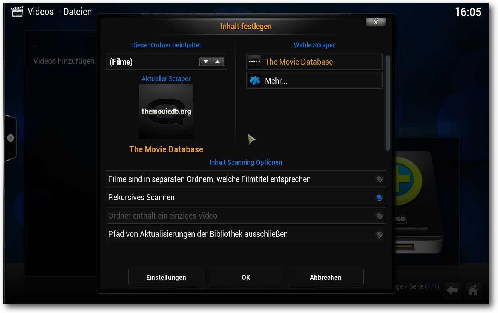Das Hinzufügen von neuen Inhalten in XBMC.
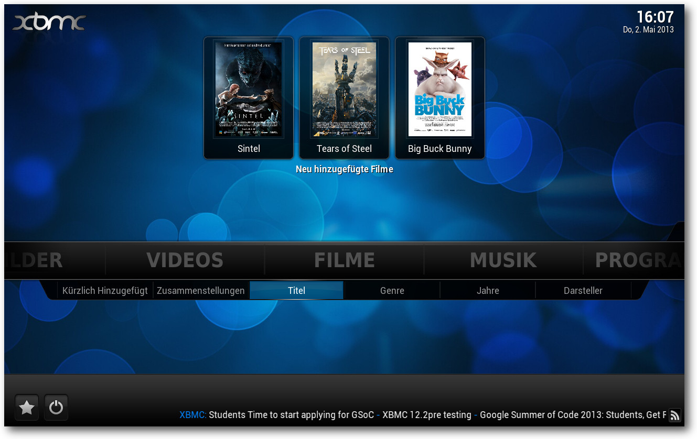
Neueste Videos erscheinen automatisch auf der Startseite.
Bei korrekt erkannten Videos blendet XBMC weitere Informationen automatisch ein.
Die Anwendung selbst ist weitgehend selbsterklärend, doch vermag sie weitaus mehr als das, was man in der Oberfläche einstellen kann. Viele Optionen, wie beispielsweise das Teilen der Datenbank über einen MySQL-Server oder eine präzise Festlegung der Kommandos, können nur direkt in den Konfigurationsdateien eingestellt werden. Interessierten Anwendern sei deshalb ein Blick auf die Seite des Projektes empfohlen. Ist das System gestartet und wurde SSH nicht abgeschaltet, ist es möglich, sich direkt auf das Gerät einzuloggen. Standardmäßig ist dabei der Nutzer root eingerichtet. Als Passwort dient openelec:
# ssh -l root RPI_DEVICE
Password: openelec
Password: openelec
Die Hardware
Die Bedienung eines Media-Centers über eine Tastatur und eine Maus ergibt nur bedingt Sinn. Eine durchaus übliche Alternative stellt deshalb die Anschaffung eines USB-Receivers samt einer passenden Fernbedienung dar. Besitzer von Android oder iOS-Geräten können alternativ auf eine Vielzahl an Apps setzen, die eine Steuerung (und Verwaltung) von XBMC ermöglichen. Beide Lösungen haben allerdings diverse Nachteile. So ist die Anschaffung einer neuen Fernbedienung nicht unbedingt jedermanns Sache. Zudem kostet ein brauchbarer Controller teils mehr als das Gerät selbst. Einer Smartphone- oder Pad-Lösung fehlt es dagegen an Haptik und sie reagiert oftmals träge. Was liegt also näher als bereits auf dem Tisch liegende Fernbedienungen zu nutzen? Möglich machen es GPIO und ein handelsüblicher IR-Receiver, wie er bei gut sortierten Elektronikhändlern für nicht einmal einen Euro erworben werden kann. Wichtig sind beim Kauf allerdings die Werte des Bauteils. Zwar verfügt der Raspberry Pi über eine 5-V-Schiene, die direkt von dem Netzteil abgegriffen wird, doch arbeiten die GPIO-Eingänge des Geräts lediglich mit 3,3 V. Erwirbt man also einen für 5 V und nicht für 3,3 V spezifizierten Receiver und klemmt diesen an die 5-V-Spannungsversorgung, ohne den Ausgang danach zu teilen, droht eine permanente Zerstörung des Raspberry Pi! Redaktioneller Hinweis: Beim Löten und der Beschaltung sollte man sehr präzise arbeiten. Dazu zählt auch die Überprüfung aller Lötstellen und Kontakte auf mögliche Kurzschlüsse und falsche Belegung der Pins. Man sollte sicherstellen, dass die Umgebung, in der man arbeitet, zu keiner elektrostatischen Entladung führen kann. Wenn man am Gerät arbeitet, sollte man es stets ausschalten. Eine falsche Belegung, Kurzschlüsse oder aber auch elektrostatische Entladung können den Raspberry Pi unwiderruflich beschädigen! Die fm-Redaktion und der Autor des Artikels übernehmen keine Haftung für mögliche Schäden, die durch die Befolgung der Anleitung entstanden sind! 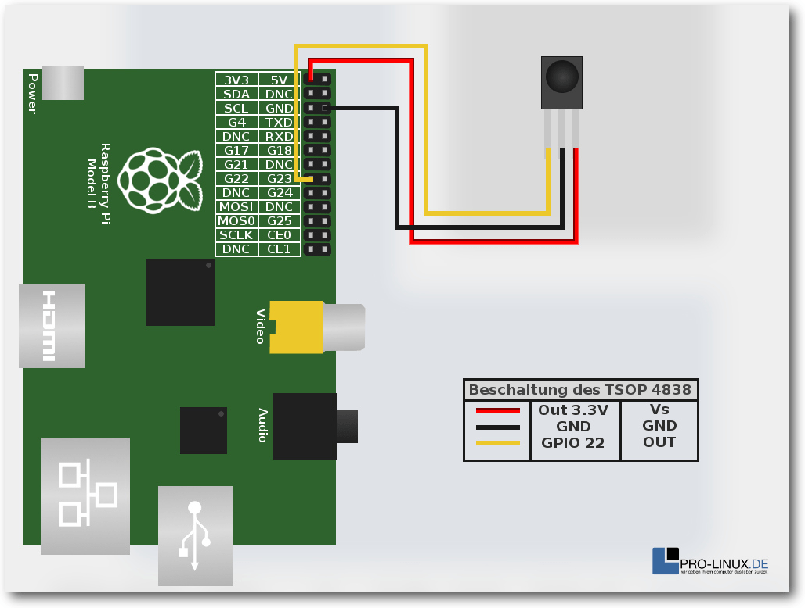Beschaltung eines IR-Empfängers an einem Raspberry Pi.
Die Pins des IR-Empfängers werden ohne eine Zusatzschaltung direkt an die GPIO-Pins des Raspberry angeschlossen. Man sollte nicht direkt auf dem Raspberry Pi löten, sondern geeignete Kabel und Stecker verwenden. Wenn man keinen passenden Verbinder kaufen will, kann man auch beispielsweise einen Stecker aus einem alten Rechner verwenden. Je nach Beschaltung des Empfängers muss man Vs an Pin1 des RPi (Out 3,3 V), Masse an Pin6 (GRD) und der Ausgang (OUT) an ein GPIO-Pin legen. Die Beschaltung der Pins stellt allerdings kein allgemeingültiges Szenario dar. Man sollte deshalb auf jeden Fall das Datenblatt konsultieren und die Belegung entsprechend den Anschlüssen des Empfängers anpassen. Zudem sollte man, sofern man andere Hardware einsetzen will, den GPIO 22 nehmen. Der Grund dafür ist einfach: Die restlichen Pins an der rechten Seite werden später noch für eine andere Schaltung benötigt, weshalb sie nicht mit dem Empfänger blockiert werden sollen. Von der Softwareseite gesehen sind nun der LIRC-Daemon einzurichten und die Tasten der Fernbedienung zu konfigurieren. OpenELEC kommt bereits von Haus aus mit einem eingerichteten LIRC und einem speziellen Kernel-Modul, das für den Raspberry und dessen GPIOs angepasst wurde. Dazu reicht es, das Modul zu laden. Danach sollte man alle Anwendungen, die auf die Schnittstelle noch zugreifen, beenden:
# ssh -l root RPI_DEVICE
# modprobe lirc_rpi gpio_in_pin=22
# kill $(pidof lircd)
# mode2 -d /dev/lirc0
Das Kommando mode2 zeigt alle Signale an, die der Receiver erhalten hat.
Drückt man eine Taste auf der Fernbedienung und sieht keine Ausgabe, während
mode2 ausgeführt wird, ist die Einrichtung des Empfängers gescheitert. In
diesem Fall empfiehlt sich ein Blick in /var/log/messages und die
Überprüfung der Beschaltung des IR-Empfängers. Gibt mode2 dagegen die
Pulsinformationen aus, hat man die Hardwareinstallation überstanden und kann
mit der Konfiguration des Daemons beginnen.
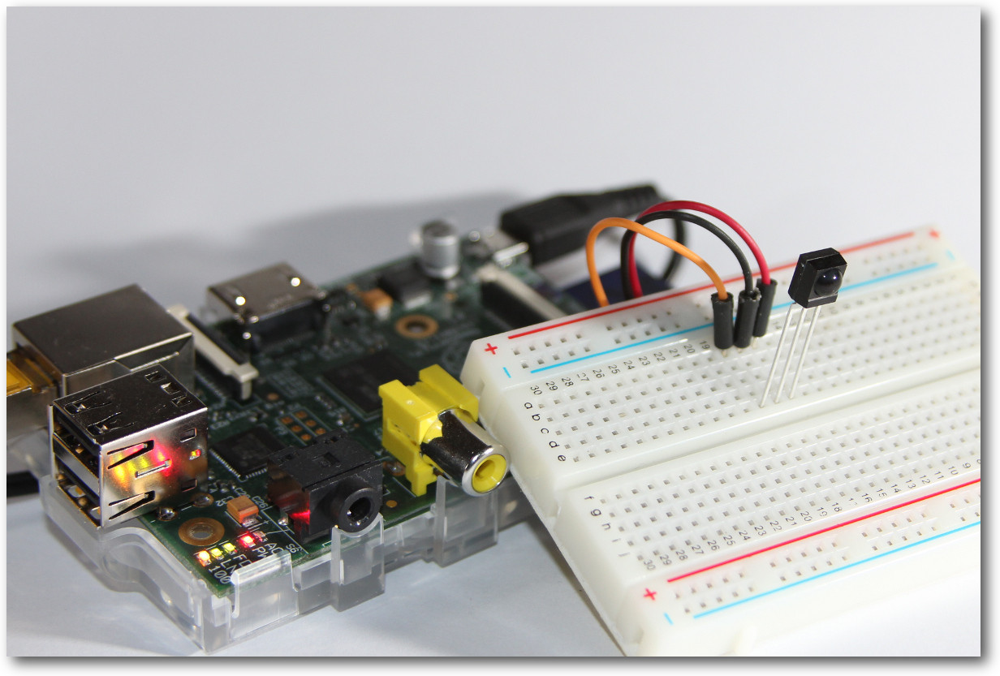# modprobe lirc_rpi gpio_in_pin=22
# kill $(pidof lircd)
# mode2 -d /dev/lirc0
Eine Steckplatine hilft bei kleineren Tests.
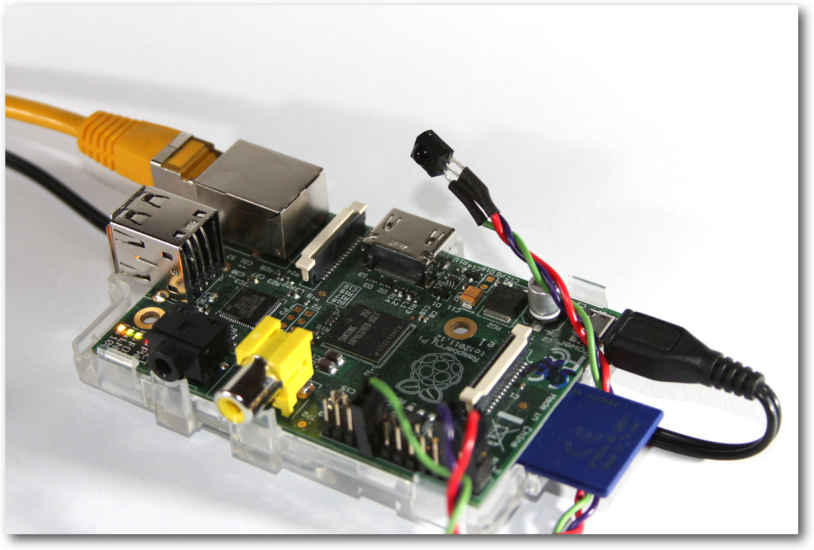
Fertig gelöteter und gesteckter IR-Empfänger.
LIRC
Bei LIRC (Linux Infrared Remote Control [13]) handelt es sich um einen Daemon, der Befehle von IR-Fernbedienungen in Programmbefehle umsetzen kann. Um die Signale von Fernbedienungen korrekt zu dekodieren, wird eine Konfigurationsdatei benötigt, die allerdings auf die jeweilige Fernbedienung abgestimmt sein muss. Man kann diese entweder selbst erzeugen oder aus dem Fundus auf der Seite des Projektes herunterladen. In Anbetracht der recht unkomplizierten Vorgehensweise kann man sich die Suche aber getrost sparen und diesen Schritt manuell durchführen. Der erste Schritt der Konfiguration sollte die Ausgabe der verfügbaren Funktionen sein. Diese Aufgabe erledigt man, indem die Kommandos in eine Datei umgeleitet werden:# kill $(pidof lircd)
# irrecord --list-namespace | grep KEY &> lirc_strings.txt
Die Datei lirc_strings.txt dient nun als Referenz für alle verfügbaren
Tasten. Nun geht es an die eigentliche Konfiguration. Wichtig ist dabei,
dass als Namen immer die Strings benutzt werden, die auch in der generierten
Datei enthalten sind. Ferner sollten alle Schritte der Konfiguration von
irrecord eingehalten werden, will man eine korrekte und saubere
Konfiguration erhalten (als komplettes Beispiel: lircd.conf).
# irrecord --list-namespace | grep KEY &> lirc_strings.txt
# kill $(pidof lircd)
# irrecord -d /dev/lirc0 ~/lircd.conf
Sind alle Tasten der Fernbedienung in der Konfiguration erfasst, kann die
neue Konfiguration mit dem Kommando irw getestet werden:
# irrecord -d /dev/lirc0 ~/lircd.conf
# kill $(pidof lircd)
# lircd ~/.config/lircd.conf
# irw
Wird nun, während lircd ausgeführt wird, eine zuvor bekannt gegebene
Taste gedrückt, sollte der String eingeblendet werden, den man ihr
zugewiesen hat. Auch hier gilt: Funktioniert dieser Schritt nicht, sollte
die Erstellung der Konfiguration überprüft werden. Eine Fortsetzung der
Konfiguration ergibt keinen Sinn, denn sie wird nicht funktionieren.
# lircd ~/.config/lircd.conf
# irw
XBMC
Nun ist es an der Zeit, die Tastenbelegung auch XBMC bekannt zu geben. Dazu muss die Konfigurationsdatei Lircmap.xml angepasst bzw. erstellt werden. Die Struktur der Einträge ist dabei recht einfach und sollte kaum Verständnisprobleme verursachen. Die zuvor konfigurierte Belegung einer Taste muss lediglich einer Funktion der Anwendung zugewiesen werden. Wie so etwas aussieht, illustriert das folgende Listing (als komplettes Beispiel: Lircmap.xml).<lircmap>
<remote device="ir_receiver">
<left>KEY_LEFT</left>
<right>KEY_RIGHT</right>
<up>KEY_UP</up>
<down>KEY_DOWN</down>
<select>KEY_OK</select>
<enter>KEY_ENTER</enter>
<menu>KEY_MENU</menu>
<info>KEY_I</info>
<title>KEY_C</title>
<back>KEY_BACK</back>
<play>KEY_PLAY</play>
[...]
Als Vorlage kann man eine bereits unter /usr/share/xbmc liegende
Lircmap.xml verwenden, die man dann an die eigenen Bedürfnisse anpasst.
Wichtig bei diesem Schritt ist neben der korrekten Zuweisung der Tasten aber
auch die korrekte Benennung des Empfängers. Im hier behandelten Fall heißt
das Device ir_receiver, dementsprechend muss auch in der Datei
lircd.conf als Name ir_receiver eingetragen werden. Stimmen die beiden
Namen nicht überein, verwendet XBMC ein falsches Gerät und die Navigation
funktioniert nicht.
<remote device="ir_receiver">
<left>KEY_LEFT</left>
<right>KEY_RIGHT</right>
<up>KEY_UP</up>
<down>KEY_DOWN</down>
<select>KEY_OK</select>
<enter>KEY_ENTER</enter>
<menu>KEY_MENU</menu>
<info>KEY_I</info>
<title>KEY_C</title>
<back>KEY_BACK</back>
<play>KEY_PLAY</play>
[...]
Abschluss der Konfiguration
Der letzte Schritt der Konfiguration der Fernbedienung dient der Komplettierung und dem korrekten Start des LIRC-Daemons. Um das zu erreichen, erstellt man eine Autostart-Datei, die beim Booten des Systems ausgeführt und in der LIRC korrekt initialisiert wird:#!/bin/sh
(modprobe lirc_rpi gpio_in_pin=22; \
while [ ! -e /var/run/lirc/lircd-lirc0 ]; do
sleep 1; \
done
if [ -h /var/run/lirc/lircd ]; \
then logger autostart: lircd socket already linked! ;\
else
logger autostart: linking lircd socket ... ; \
rm /var/run/lirc/lircd; \
ln -s /var/run/lirc/lircd-lirc0 /var/run/lirc/lircd; \
fi)&
Listing: lircd_autostart.sh
Ist dieser Schritt erledigt, kann das Gerät aus- und eingeschaltet werden.
Sollten alle Schritte befolgt worden und keine Fehler aufgetreten sein,
sollte sich nun XBMC mittels der Fernbedienung steuern lassen. Im Falle
eines Fehlers empfiehlt es sich, auf dem Gerät das Kommando irw
auszuführen und zu überprüfen, ob die Eingaben der Fernbedienung korrekt von
LIRC erkannt werden.
(modprobe lirc_rpi gpio_in_pin=22; \
while [ ! -e /var/run/lirc/lircd-lirc0 ]; do
sleep 1; \
done
if [ -h /var/run/lirc/lircd ]; \
then logger autostart: lircd socket already linked! ;\
else
logger autostart: linking lircd socket ... ; \
rm /var/run/lirc/lircd; \
ln -s /var/run/lirc/lircd-lirc0 /var/run/lirc/lircd; \
fi)&
LCD-Anzeige
Grundlagen
Die Fokussierung von XBMC auf eine grafische Ausgabe bringt nicht nur Vorteile, sondern auch einen nicht unerheblichen Nachteil mit sich: Will man das Gerät lediglich zum Abspielen von Audio-Dateien oder zum Check der ankommenden E-Mails nutzen, muss stetig ein Fernseher oder Monitor eingeschaltet sein. Vorbei sind in diesem Fall die Vorteile eines geringen Stromverbrauchs, will man doch vielleicht nur MP3-Dateien auf der heimischen Stereoanlage oder einem Kopfhörer hören. Dementsprechend liegt der Gedanke recht nahe, die eigentliche Navigation ebenfalls auf einem anderen Wege stattfinden zu lassen. Neben der eingangs besprochenen Möglichkeit über ein mobiles Gerät existiert mit der Einbindung eines LCD-Moduls eine weitere Alternative. Einfach ist sie allerdings nicht, denn sie bedarf unter anderem diverser Lötarbeit und einer Neukompilierung diverser Teile von OpenELEC. Der Aufwand lohnt sich aber, denn sie bringt den Vorteil der Konfigurierbarkeit. So ist es unter anderem ein Leichtes, nicht benötigte Pakete zu entfernen, eine gewünschte Konfiguration zum Standard zu wählen oder alternative Anwendungen zu installieren. Benötigt wird für hierfür ein handelsüblicher Hitachi HD44780-Schaltkreis – eine De-facto Industriestandard-Steuereinheit für kleine alphanumerische Dot-Matrix-LCD-Module und dementsprechend auch günstig in jedem gut sortierten Elektronikhandel zu haben. Der Schaltkreis übernimmt die Darstellung der Navigation und kümmert sich um die komplette Ansteuerung inklusive Erzeugung aller benötigten Signale für das Display. Ob er zwei-, drei- oder vierzeilig ist, über 16 oder mehr Zeichen verfügt, spielt dabei keine Rolle, denn angesteuert wird dieser durch das bereits in der Distribution enthaltene Modul, das lediglich um eine GPIO-Ansteuerung ergänzt wurde.Vorbereitung
Wie eingangs beschrieben, erfordert die Erweiterung des HD44780-Treibers eine Neukompilierung einiger Teile der Distribution. Dazu ist es zu allererst notwendig, die Distribution im Quellcode herunterzuladen, um sie schlussendlich samt allen benötigten Werkzeugen für die ARM-Plattform zu kompilieren. Der eigentliche Vorgang gestaltet sich zwar ziemlich zeitintensiv und wird unter Umständen etliche Stunden dauern, kompliziert ist er aber nicht wirklich:# git clone git://github.com/OpenELEC/OpenELEC.tv.git
# cd OpenELEC.tv/
# git checkout openelec-3.0
# PROJECT=RPi ARCH=arm make
Fehlt es der aktuellen Installation an Werkzeugen, die für die Kompilierung
notwendig sind, bricht der Vorgang ab und unterbreitet dem Anwender einen
Vorschlag über noch zu installierende Tools. Diese können dann entweder
manuell oder aber automatisch heruntergeladen und eingerichtet werden.
Bricht der Vorgang dagegen bei der Kompilierung einer Bibliothek ab, so
könnte das an einem fehlenden Link liegen:
# cd OpenELEC.tv/
# git checkout openelec-3.0
# PROJECT=RPi ARCH=arm make
# cd ./build.OpenELEC-RPi.arm-devel/toolchain/
# ln -s lib64/ lib
# cd ../../
Ist der Vorgang abgeschlossen, steht die neue Distribution zur Installation
bereit. Alternativ kann anstatt make auch make release verwendet
werden. In diesem Fall erzeugt das Skript am Ende des Vorgangs eine
Image-Datei, die in der Struktur der regulären Download-Datei entspricht und
genauso installiert werden kann wie das Original.
Doch stellt die Kompilierung einer eigenen Distribution keine Übung dar, die
aus Langeweile durchgeführt wurde. Der Sinn der Aktion soll die Erweiterung
der Funktionalität und der Konfiguration sein. Dementsprechend ist es nun an
der Zeit, sich „lcdproc“ zu widmen, einem System, das wir für die
Ansteuerung des LCD-Moduls einsetzen werden.
lcdproc stellt eine Client/Server-Suite dar und beinhaltet zahlreiche
Treiber für verschiedenartige LCD-Module. Unter anderem unterstützt der
Server Matrix Orbital, Crystal Fontz, Bayrad, LB216, Wirz-SLI und eben auch
den HD44780. Die Standardfunktionalität reicht allerdings nicht aus, um das
Modul direkt über GPIO anzusprechen. Dazu fehlt es dem Treiber an einer
Ansteuerung, die nun per Patch nachgeliefert werden soll.
Zu beachten ist allerdings, dass es sich bei dem Patch nicht um eine
offizielle Erweiterung von lcdproc handelt, sondern lediglich um eine
Anpassung für die hier vorliegenden Zwecke. So kann beispielsweise weder das
Backlight direkt aus der Anwendung gesteuert werden, noch werden die
Eingänge des Moduls überprüft. Sinn ergeben würde es hier sowieso wenig,
denn das Modul arbeitet mit 5 V und ohne eine Spannungsteilung ist es nicht
direkt am Raspberry nutzbar. Zudem braucht man die Eingänge nicht. Für eine
reine Anzeige ist das Modul aber perfekt.
Um den Arbeitsaufwand so gering wie möglich zu halten und nicht jedes Mal
lcdproc patchen zu müssen, bedient man sich einfach der
Patch-Funktionalität von OpenELEC. Dazu reicht es, den Patch
lcdproc-0.5.6-lcd-hd44780-rpi-gpio_0.3.patch in die packets-Struktur
zu kopieren und make auszuführen. Doch keine Sorge – da alle Pakete
bereits kompiliert wurden, dauert dieses Mal die Erstellung des Images nur
einen Bruchteil des früheren Vorgangs:
# ln -s lib64/ lib
# cd ../../
# cd OpenELEC.tv/
# cp ~/VERZEICHNIS/lcdproc-0.5.6-lcd-hd44780-rpi-gpio_0.3.patch packages/sysutils/lcdproc/patches/
# PROJECT=RPi ARCH=arm ./scripts/clean lcdproc
# PROJECT=RPi ARCH=arm make
# cp ~/VERZEICHNIS/lcdproc-0.5.6-lcd-hd44780-rpi-gpio_0.3.patch packages/sysutils/lcdproc/patches/
# PROJECT=RPi ARCH=arm ./scripts/clean lcdproc
# PROJECT=RPi ARCH=arm make
Hardware
Den Kern der Anzeige stellt, wie eingangs bereits erläutert, der integrierte Schaltkreis Hitachi HD44780 dar. Dieser übernimmt die Darstellung von Text durch ein integriertes Zeichengenerator-ROM und ist auch für die Ansteuerung, inklusive Erzeugung aller benötigten Signale für das Display, verantwortlich. Der ursprüngliche Hitachi wird zwar mittlerweile nicht mehr angeboten, doch existieren zahlreiche zumeist kompatible Nachbauten, die in jedem gut sortieren Elektronikhandel oder in größeren Versandhäusern zu einem Preis ab vier Euro bezogen werden können. Die Anzeigemodule sind in den Konfigurationen 8×1 Zeichen bis hin zu 40×4 Zeichen verfügbar. Welches Modell man nutzt spielt keine Rolle, denn die Treiber kommen mit allen klar. Auch ist es zweitrangig, in welcher Farbkombination das Modul ausgeliefert wird. Das Anzeigemodul selbst ist bereits anschlussfertig für die Verwendung an GPIO-Pins. Die Anschlüsse sind allerdings nicht normiert, doch halten sich die meisten Hersteller an eine bestimmte Belegung. Eine Garantie hierfür existiert aber nicht. Dementsprechend sei jedem Anwender empfohlen, das Datenblatt vor der Inbetriebnahme zu studieren, um eine mögliche Falschbeschaltung zu vermeiden.| Beschaltung der meisten HD44780-kompatiblen Module | |||||
| Pin Nr. | Symbol | Level | Funktion | RPi Pin | RPi Symbol |
| 1 | VSS | 0V | Stromversorgung GND | 6 | GND |
| 2 | VDD | +5.0V | Stromversorgung +5V | 2 | +5V |
| 3 | V0 | – | Kontrastspannung | 6 | GND |
| 4 | RS | H/L | H: Data Register (RW); L: Instruction Register | 26 | GPIO 7 |
| 5 | R/W | H/L | Datenleitung: H: Read; L: Write | 6 | GND |
| 6 | E | H/L | Signal Enable | 24 | GPIO 8 |
| 7 | DB0 | H/L | Datenleitung 0 | - | - |
| 8 | DB1 | H/L | Datenleitung 1 | - | - |
| 9 | DB2 | H/L | Datenleitung 2 | - | - |
| 10 | DB3 | H/L | Datenleitung 3 | - | - |
| 11 | DB4 | H/L | Datenleitung 4 | 22 | GPIO 25 |
| 12 | DB5 | H/L | Datenleitung 5 | 18 | GPIO 24 |
| 13 | DB6 | H/L | Datenleitung 6 | 16 | GPIO 23 |
| 14 | DB7 | H/L | Datenleitung 7 | 12 | GPIO 18 |
| 15 | LED+ | +5.0V | Hintergrundbeleuchtung + | 2 | +5V |
| 16 | LED- | 0V | Hintergrundbeleuchtung GND | 6 | GND |
Beschaltung eines LCD-Moduls an einem Raspberry Pi.
Für das Beispiel wurde der Schaltung noch ein Widerstand hinzugefügt. Dieser ist prinzipiell optional und kann durch einen Potentiometer ersetzt werden. Er reguliert die Spannung für die Hintergrundbeleuchtung. Alternativ können auch ein Widerstand für den Kontrast und ein Transistor zwischen die Pins 15 und 16 und einem GPIO-Pin geschaltet werden, um die Hintergrundbeleuchtung komplett abschalten zu können. Um die Schaltung nicht zu verkomplizieren und auch für Anfänger relativ verständlich zu halten, wurde auf diese Funktion allerdings verzichtet. Auch hier sollte man beim Löten sauber arbeiten. Man sollte vor der Inbetriebnahme die Lötstellen überprüfen und Kurzschlüsse eliminieren. Wenn man sanft an allen Kabeln zieht, kann man sicherzustellen, dass alle Verbindungen korrekt verlötet wurden. Wichtig ist, sich beim Löten Zeit zu lassen und immer mal nachzuschauen, dass man sich bei der Beschaltung nicht verrechnet hat. Ist das Modul gelötet, kann seine Funktionsweise getestet werden. Dazu wird es mit dem Raspberry Pi verbunden und das Gerät eingeschaltet. Sofern es zu keinem Fehler kommt, sollte die obere Zeile sofort vollständig aufleuchten. Die untere Zeile sollte dagegen ausgeschaltet sein. Sieht man dieses Verhalten nicht, ist die Verschaltung wahrscheinlich falsch.
Software
Nun ist es an der Zeit, die neue Anzeige auch in das System einzubinden und die Ausgaben von XBMC grafisch auf unserem neuen Display darzustellen. Im Gegensatz zur Einrichtung der Fernbedienung gestaltet sich dieser Schritt fast schon puristisch. Dazu wird die Standardkonfiguration in ein beschreibbares Verzeichnis umkopiert und geringfügig angepasst:# ssh -l root RPI_DEVICE
# cp /etc/LCDd.conf ~/.config/
Die Anpassung der LCDd.conf ist:
# cp /etc/LCDd.conf ~/.config/
[...]
Driver=hd44780
[...]
## Hitachi HD44780 driver ##
[hd44780]
ConnectionType=rpi
Size=16x2
[..]
Wie dem Listing entnommen werden kann, müssen in der Datei nur die Werte für
Driver und in
der Sektion [hd44780] für ConnectionType und Size
angepasst werden. Size stellt die Größe des LCD-Moduls dar. Nutzt man
also ein vierzeiliges Display mit je 20 Zeichen, muss der Wert von Size
auf 20x4 angepasst werden.
Abschließend ist es an der Zeit, das Display auch in XBMC zu aktivieren.
Dies passiert entweder durch die Änderung der Konfigurationsdatei oder durch
eine direkte Wahl unter
„System -> Einstellungen -> System -> Video Hardware -> LCDVFD benutzen“.
Spätestens nach dem nächsten Bootvorgang sollte bereits beim Start der
Distribution eine Meldung auf dem LCD-Modul eingeblendet werden, wonach LCDd
korrekt eingerichtet wurde. Nach dem Start von XBMC sollte man zudem bei der
Navigation den momentan ausgewählten Menüpunkt sehen und bei der Wiedergabe
von Medien diverse Informationen.
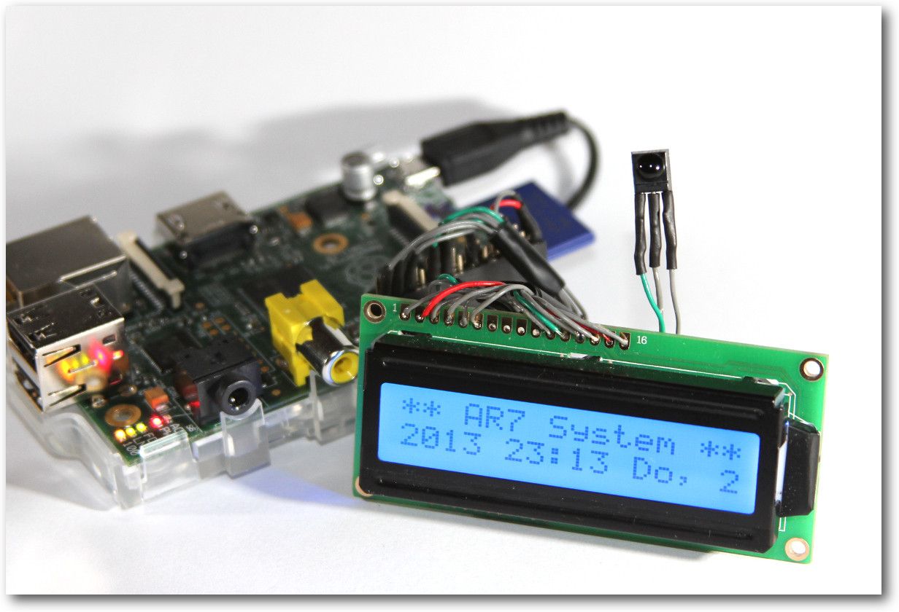Driver=hd44780
[...]
## Hitachi HD44780 driver ##
[hd44780]
ConnectionType=rpi
Size=16x2
[..]
Fertig gelöteter und funktionsfähiger LCD-Schaltkreis, samt einem IR-Empfänger.
Weitere Optimierungen
Fertig?! Fast! Da man die Mühe der Neukompilierung bereits auf sich genommen hat, empfiehlt es sich abschließend, das System noch etwas zu optimieren. Möglichkeiten hierfür gibt es genügend – nicht, weil OpenELEC eine schlechte Distribution ist, sondern weil – wie alle Distributionen – auch OpenELEC auf einen vielfältigen Einsatz optimiert wurde und ein breites Spektrum abdecken will. So versuchen die Ersteller alle möglichen Kombinationen, sowohl was die Hardware, als auch was die Software betrifft, in die Standardinstallation zu implementieren. Dabei wird wohl kaum ein Anwender all die Funktionen des Produktes einsetzen. Nutzt man beispielsweise kein WLAN, empfiehlt es sich, die Komponente komplett zu entfernen. Dasselbe gilt für Bluetooth, Samba, NFS oder nicht benötigte Dateisysteme oder Anwendungen. Je kleiner der Kernel und das Systemimage, desto besser. Entfernte Funktionalität bedeutet nicht nur weniger unnötige Anwendungen, sondern auch eine geringere Größe und damit einen schnelleren Systemstart und weniger benötigte Systemressourcen. Dementsprechend empfiehlt es sich, den Kernel anzupassen und alles, was nicht benötigt wird, zu entfernen oder wenigstens als Modul zu kompilieren. Am einfachsten erledigt man den Schritt, indem die OpenELEC-Konfigurationsdatei in ein separates Kernelverzeichnis umkopiert, Funktionen entfernt, die neue Konfiguration wieder abspeichert und die Distribution gebaut wird:# cd OpenELEC.tv
# cd build.OpenELEC-RPi.arm-devel/linux-3.6.11/
# cp ../../projects/RPi/linux/linux.arm.conf .config
# make menuconfig
[...]
# cp .config ../../projects/RPi/linux/linux.arm.conf
# cd ../../
# PROJECT=RPi ARCH=arm ./scripts/clean linux
Eine weitere Optimierungsmöglichkeit stellt die Erhöhung der
Arbeitsgeschwindigkeit (Overclocking) des Systems dar. Was sich auf den
ersten Blick nach einem Suizidvorhaben anhört, ist in der Wirklichkeit
weitaus problemloser. So erlaubt beispielsweise der Hersteller bereits seit
geraumer Zeit das Übertakten des Systems, ohne dass ein Garantieverlust
auftritt. Damit kann der Prozessor des Raspberry Pi mit bis zu 1 GHz laufen.
Die mögliche Taktrate ist allerdings von Platine zu Platine unterschiedlich,
so die damalige Ankündigung. Dementsprechend sollten Anwender die
Übertaktung behutsam durchführen und bei Problemen wieder die
Originalgeschwindigkeit herstellen. Auch sollten Taktraten oberhalb 1 GHz
nicht benutzt werden, will man keinen Garantieverlust riskieren.
Nicht empfehlenswert ist zudem die Abschaltung der dynamischen
Taktermittlung („force_turbo“) oder die Erhöhung der Limits. Der Hersteller
speichert nämlich „gefährliche“ Kombinationen mittels eines „Sticky Bits“
permanent in der CPU und wird mit großer Wahrscheinlichkeit im Falle eines
Fehlers einen Garantieantrag verweigern. Der Status des Bits kann direkt
mittels
# cd build.OpenELEC-RPi.arm-devel/linux-3.6.11/
# cp ../../projects/RPi/linux/linux.arm.conf .config
# make menuconfig
[...]
# cp .config ../../projects/RPi/linux/linux.arm.conf
# cd ../../
# PROJECT=RPi ARCH=arm ./scripts/clean linux
# cat /proc/cpuinfo
abgefragt werden. Interessant ist hier die Spalte Revision. Während sie
beispielsweise bei einem regulären Gerät 0004 anzeigt, wird sie bei einem
mit Sticky Bit markierten Gerät 1000004 betragen.
Nun geht es an ein behutsames Übertakten der CPU. Dies geschieht, indem die
neuen Taktzahlen der CPU beim Booten bekannt gegeben werden. Sie stehen in
der Datei config.txt, die entweder auf der Boot-Partition der SD-Karte
oder unterhalb
OpenELEC.tv/packages/tools/bcm2835-bootloader/files/3rdparty/bootloader/
gefunden werden kann.
Hier müssen nun die Werte für arm_freq,
core_freq, sdram_freq und over_voltage angepasst werden. Die
eigentlichen Werte können der folgenden Tabelle entnommen werden:
| Frequenzwerte der Rpi-CPU | ||||
| Art der Übertaktung | arm_freq | core_freq | sdram_freq | over_voltage |
| Keine | 700 | 250 | 400 | 0 |
| Leichte | 800 | 300 | 400 | 0 |
| Mittel | 900 | 333 | 450 | 2 |
| Hoch | 950 | 450 | 450 | 6 |
| Turbo | 1000 | 500 | 500 | 6 |
# vcgencmd get_config arm_freq
# cat /sys/devices/system/cpu/cpu0/cpufreq/scaling_cur_freq
# cat /sys/devices/system/cpu/cpu0/cpufreq/scaling_cur_freq
Abschließend
Wie in jedem Projekt stellen auch die hier aufgezeigten Möglichkeiten nur einen Bruchteil des Machbaren dar. Die Hardware des Raspberry Pi ermöglicht viele interessante Lösungen, die von reiner Spielerei bis hin zu wirklich nützlichen Funktionen reichen. Gepaart mit der Möglichkeit, alle Aspekte der Distribution zu verändern, ergeben sich recht schnell weitere Wünsche oder Ideen, die implementiert werden können. Speicherung der Datei in einer externen Datenbank? Videorekorder für Fernsehprogramme? Zentrales Multimediasystem fürs ganze Haus? Ambilight? Die Grenzen des Machbaren sind recht weit gesteckt und ihre Auslotung war selten so kostengünstig wie im Falle des Raspberry Pi. Links[1] http://www.raspberrypi.org/
[2] http://www.pro-linux.de/artikel/2/1624/
[3] http://www.pro-linux.de/news/1/19787/raspberry-pi-kameramodul-verfuegbar.html
[4] http://www.pro-linux.de/news/1/17019/raspberry-pi-minirechner-fuer-25-usd.html
[5] http://www.arm.com/products/processors/classic/arm11/index.php
[6] http://www.raspberrypi.org/about
[7] http://www.raspbian.org/
[8] http://www.raspberrypi.org/downloads
[9] http://openelec.tv/
[10] http://www.raspbmc.com/
[11] http://xbian.org/
[12] http://openelec.tv/get-openelec/download/viewcategory/10-raspberry-pi-builds
[13] https://de.wikipedia.org/wiki/LIRC
| Autoreninformation |
| Mirko Lindner (Webseite) befasst sich seit 1990 mit Unix. Seit 1998 ist er aktiv in die Entwicklung des Kernels eingebunden. Unter anderem ist er der Maintainer der Kernel-Treiber sky2, sk98lin, skri, skge und skfp. Daneben ist er einer der Betreiber von Pro-Linux.de. |
Diesen Artikel kommentieren
Zum Index
Rezension: Raspberry Pi – Einstieg und User Guide
von Jochen Schnelle Der Raspberry Pi [1] (oder kurz einfach Pi) erfreut sich als preiswerter Mini-PC durchaus einer gewissen Popularität, jedenfalls mehr als viele andere Computer. Von daher ist es sicherlich nicht verwunderlich, dass auch Literatur zum Minirechner erscheint, wie das vorliegende Buch „Raspberry Pi – Einstieg und User Guide“, das einen Einblick in verschiedenen Facetten der Nutzung des Pi gibt. Redaktioneller Hinweis: Wir danken dem mitp-Verlag für die Bereitstellung eines Rezensionsexemplares. Einer der beiden Autoren des Buchs ist Eben Upton, seines Zeichens Hauptinitiator und Chefentwickler des Rasbperry Pi und auch Vorstand der „Raspberry Pi Foundation“ [2]. Hier sollte also profundes Wissen rund um den Minirechner vorhanden sein. Der Mitautor, Gareth Halfacree, hat ebenfalls Schreiberfahrung, ist bei anderen Open-Hardware-Projekten aktiv und bietet somit eine gute Ergänzung zu Upton.Thematisches
Das vorliegende Buch möchte in die Nutzung des Raspberry Pi einführen. Die Hauptthemenblöcke sind dabei die Inbetriebnahme und Anwendungsmöglichkeiten, Administration des (Linux-)Systems, erste Schritte in der Programmierung sowie eine Einführung in Hardwareerweiterungen, welche an den Pi angeschlossen werden können. Also ein durchaus weites Feld, das das Autorenduo angeht.Eine längere Einleitung
Das Buch beginnt – bevor es an den eigentlichen Inhalt geht – mit einer recht langen Einleitung über elf Seiten. Hier wird beschrieben, warum es heute überhaupt einen Raspberry Pi gibt und mit welcher Motivation der Computer entwickelt wurde. Des Weiteren erhält der Leser hier einen kleinen Einblick in die recht bewegte Entwicklungsgeschichte des Pi. Schon beim Lesen der Einleitung spürt man den Enthusiasmus der Autoren zum Raspberry Pi und deren Motivation, mit Hilfe des Pi, den Leser zum kreativen Umgang mit dem Rechner – sei es über Programmierung oder durch Hardwarebasteleien – zu motivieren.Der Inhalt
Wie bereits weiter oben erwähnt ist das Buch in mehrere Hauptthemenblöcke unterteilt. Begonnen wird mit einer Vorstellung der Hardware, wobei der Schwerpunkt auf den Anschlussmöglichkeiten liegt – Video, Audio, USB, SD-Karte und Netzwerk. Die folgenden ca. 80 Seiten befassen sich dann mit der Systemadministration. Auch hier wird „ganz vorne“ begonnen, also mit dem Herunterladen eines Linux-Images, dem Kopieren auf eine SD-Speicherkarte und dem ersten Booten. Als Betriebssystem wird durchweg Raspian [3], also das für den Pi angepasste Debian Linux, verwendet. Alternativen werden aber auch im Verlauf des Buches immer wieder erwähnt. Weiterhin findet man in diesem Abschnitt einige grundlegende (Linux-)Befehle zur Systemadministration. Den Abschluss des Themenblocks bildet eine recht ausführliche Übersicht über die Konfiguration des Rechners. Der folgende, ca. 30 Seiten umfassende Themenblock bringt dem Leser näher, wie man den Raspbery Pi als Mediacenter nutzen kann, wie man Office-Arbeiten erledigt und wie man den Rechner als Webserver nutzt, z. B. zum Betreiben eines Blogs.Programmierung und Hardwarebasteleien
Das restliche Buch beschäftigt sich mit der kreativen Nutzung des Raspberry Pi durch Programmierung und Hardwarebasteleien. Der Programmierteil ist dabei wiederum zweigeteilt: Als erstes beschreiben die Autoren die visuelle Programmierung mittels Scratch [4], dann folgt ein Abschnitt zur Programmierung in Python, der „offiziellen“ Programmiersprache des Pi. Der Python-Teil besteht dabei – neben einer kurzen Einführung in Python – aus zwei sehr konkreten Beispielen, nämlich dem Programmieren eines Clones des Spiel-Klassikers „Snake“ [5] sowie der Erstellung eines kleinen Programms für IRC-Chats. Alle zugehörigen Listings sind dabei vollständig im Buch zu finden. Der Hardware-Teil beginnt mit einer grundlegenden Einführung in das Basteln von eigenen Hardwareerweiterungen. Erklärt wird dabei unter anderem, wie man Steck- und Lochrasterplatinen richtig bestückt, wie man anhand der farbigen Ringe Widerstände klassifiziert und wie man richtig lötet. Danach werden zwei einfache, aber grundlegende Schaltungen erstellt, die über die GPIO-Pins (GPIO = Generel Purpose Input/Output) angesteuert und über Python kontrolliert werden. Den Abschluss des Buches bildet eine Übersicht über verschiedene, leistungsfähigere Erweiterungsboards für den Raspberry Pi.Schreibstil
Die Autoren pflegen einen lockeren, sehr gut lesbaren Schreibstil. Auch wenn der Inhalt durchaus kompakt dargestellt wird, ist immer die nötige Tiefe (und der nötige Umfang) vorhanden, um das Gezeigte dem Leser verständlich näher zu bringen.Nicht umfassend, aber sehr gut
Aufgrund der Vielfältigkeit der Themen und des Umfangs des Buches von 288 Seiten ist schon klar, dass keines der Themen umfassend abgehandelt werden kann. Aber dies ist auch gar nicht das Ziel des Buches. Die Autoren begleiten den Leser auf den ersten Schritten zu den verschiedenen Themen und bringen ihm die notwendigen Grundlagen näher, wobei stets ein sehr konkreter Bezug zur Praxis besteht. Gleichzeitig motivieren sie den Leser, das Gelernte anzuwenden und selbstständig zu vertiefen. Tipps, Hinweise und weiterführende Links sind an diversen Stellen im Buch vorhanden.Fazit
Das Buch „Raspberry Pi – Einstieg und User Guide“ bietet einen sehr guten Einstieg in die Welt des Raspberry Pi. Auch Einsteiger ohne Vorkenntnisse können mit Hilfe des Buches die praxisnahe Nutzung des Pi erlernen. Wer einen Raspberry Pi besitzt (oder plant, einen anzuschaffen), und noch keine weiterführenden Kenntnisse in der Linux-Systemadministration bzw. Programmierung mit Python oder Hardwarebasteleien hat, dem kann das Buch durchweg empfohlen werden. Redaktioneller Hinweis: Da es schade wäre, wenn das Buch bei Jochen Schnelle verstaubt, wird es verlost. Die Gewinnfrage lautet: Wofür steht das „Pi“ im Namen des Raspberry Pi? Die Antworten können bis zum 9. Juni 2013, 23:59 Uhr über die Kommentarfunktion unterhalb des Artikels oder per E-Mail an| Buchinformationen | |
| Titel | Raspberry Pi – Einstieg und User Guide [6] |
| Autor | Eben Upton, Gareth Halfacree |
| Verlag | mitp-Verlag, 2013 |
| Umfang | 288 Seiten |
| ISBN | 978-3826695223 |
| Preis | 19,95 € |
Links
[1] https://de.wikipedia.org/wiki/Raspberry_Pi
[2] http://www.raspberrypi.org/about
[3] http://www.raspbian.org/
[4] https://de.wikipedia.org/wiki/Scratch_(Programmiersprache)
[5] https://de.wikipedia.org/wiki/Snake
[6] http://www.it-fachportal.de/shop/buch/Raspberry Pi/detail.html,b188743
| Autoreninformation |
| Jochen Schnelle (Webseite) besitzt selber einen Raspberry Pi, denn er als Miniserver und für andere „Spielereien“ nutzt. |
Diesen Artikel kommentieren
Zum Index
Rezension: Python 3 – Lernen und professionell anwenden
von Jochen Schnelle Das deutschsprachige Buch „Python 3 – Lernen und professionell anwenden“ möchte einen praktischen Einstieg in die Programmiersprache Python in der Version 3, mit einem Fokus auf objektorientierter Programmierung, bieten. Des Weiteren eignet es sich – laut Klappentext – auch als (begleitendes) Buch für die Lehre. Redaktioneller Hinweis: Wir danken dem mitp-Verlag für die Bereitstellung eines Rezensionsexemplares. Im Buch wird Python in der Version 3.3 behandelt, dies ist die – zumindest zum aktuellen Zeitpunkt (April 2013) – aktuellste Python-Version der 3er-Serie. Von daher ist das Buch voll auf der Höhe der Zeit. Der Inhalt erstreckt sich dabei über ca. 760 Seiten, gefolgt von ca. 30 Seiten Anhängen mit Referenzen, Zeichentabelle usw. Es handelt es sich also, zumindest vom Seitenumfang her, um ein umfangreiches Werk.Inhaltliches
Das Buch beinhaltet insgesamt 27 Kapitel. Das erste, zehnseitige Kapitel ist erst einmal „Python-frei“ und führt allgemein in die Programmierung ein. Danach folgen zwei Kapitel über 22 Seiten, welche die Installation und die ersten Schritte inkl. der Nutzung der Python-Shell IDLE [1] erklären. Die folgenden sechs Kapitel befassen sich dann mit den Grundlagen der Programmiersprache: Datentypen, Funktionen und Ein-/Ausgabeoperation. Ab dem zehnten Kapitel geht es dann um Klassen, Objektorientierung und objektorientiertem Modellieren. Dieser Teil ist mit rund 80 Seiten recht umfangreich und detailliert. Es folgt ein kurzes Kapitel zu Systemfunktionen, bevor der nächste große Themenblock kommt: graphische Benutzeroberflächen.Graphische Oberflächen
Dieses Thema erstreckt sich über fünf Kapitel, insgesamt ca. 120 Seiten, und ist thematisch damit der größte Block des Buchs. Behandelt wird alles, von den ersten Schritten bis hin zu komplexeren Layouts. Als Basis dient das Grafik-Toolkit Tkinter [2], welches in Python standardmäßig enthalten ist. Es folgen dann Kapitel zu den Themen Threads, Debugging, CGI- und Internetprogrammierung, Datenbankanbindung (an SQLite), XML sowie „Testen und Tuning“.Beispiele und Übungen
Das Buch geizt nicht mit Beispielen. Zu allem Gezeigtem gibt es vollständige Listings, welche den Inhalt unterstützen. Alle Listings sind komplett abgedruckt, somit eignet sich das Buch auch ohne Weiteres als „Offline-Lektüre“. Alle Quelltexte und Beispiele sind auch auf der dem Buch beiliegenden CD enthalten. Des Weiteren gibt es nach jedem Kapitel diverse, unterschiedlich komplexe, Übungsaufgaben, welche der Autor dem Leser stellt. Die Lösungen inklusive der Listings und Erklärungen sind im Anschluss daran zu finden, sodass die eigene Lösung direkt überprüft werden kann.Licht!
Da sich das Buch (auch) an Programmieranfänger wendet, ist es natürlich wichtig, dass die Grundlagen gut und verständlich erklärt werden. Hier liegt eine der echten Stärken des Buchs. Egal, ob es sich um die Grundlagen der Programmierung, Objektorientierung oder auch XML handelt – zu jedem Thema gelingt es dem Autor Michael Wiegend sehr gut, das notwendige Wissen gut verständlich und kompakt zu vermitteln. Damit wird auch der Anspruch des Buches unterstrichen, für die Lehre geeignet zu sein.… und Schatten?
Wo Licht ist, ist bekanntlich auch Schatten. An einigen Stellen merkt man dem Buch an, dass die ursprüngliche 1. Auflage schon vor längerer Zeit erschienen ist. So wird z. B. im Kapitel zur Internetprogrammierung noch von Netscape Navigator gesprochen, Chrome oder Safari werden gar nicht erwähnt – dies spiegelt nicht wirklich den aktuellen Stand der Dinge wider. Beim Thema Internet und serverseitiger Programmierung fällt weiterhin auf, dass das Buch „nur“ auf CGI-Programmierung eingeht. Der seit mehreren Jahren weithin eingesetzt Python-Standard WSGI [3] wird an keiner Stelle im Buch erwähnt. Ein weiterer, etwas schwerwiegenderer Mangel ist, dass der de-facto Standard zum Stil von Python-Code namens PEP8 [4] ebenfalls nicht einmal ansatzweise erwähnt wird.Umfassend?
Alle im Buch verwendeten Python-Datentypen, -Module und -Funktionen werden – wo immer nötig – hinreichend detailliert erklärt. Allerdings ist das Buch keine umfassende Referenz für Python – viele Module, welche in der Standardinstallation enthalten sind, werden im Buch nicht behandelt. Wobei dies auch nicht das erklärte Ziel des Buchs ist.Für wen?
Für wen ist das Buch nun geeignet? In erster Linie wohl in der Tat für Kompletteinsteiger in die Programmierung. Zum einem eignet sich Python als Programmiersprache dafür sehr gut, zum anderen kommen hier die Stärken des Buchs, nämlich die Erklärung der Grundlagen, voll zu Geltung. Aufgrund dessen und der Vielzahl der enthaltenen Übungen und Beispiele kann das Buch auch durchaus als Empfehlung als begleitende Literatur für Lehrveranstaltung gesehen werden. Wer jedoch bereits Erfahrung in der objektorientierten Programmierung hat und einen Überblick oder Einstieg in Python sucht, dem kann „Python 3 – Lernen und professionell anwenden“ nur sehr bedingt empfohlen werden, da nur Teile des gesamten Funktionsumfangs von Python dargestellt werden. Hier eignen sich z. B. eher die (englischsprachigen) Bücher „The Python Standard Library by Example“ (Rezension in freiesMagazin 9/2011 [5]) oder auch „Python – Essential Reference“ (Rezension in freiesMagazin [6]). Redaktioneller Hinweis: Da es schade wäre, wenn das Buch bei Jochen Schnelle verstaubt, wird es verlost. Die (diesmal zwei) Gewinnfragen lauten:- In welchem Jahr wurde die erste Python-3-Version (Python 3.0) offiziell veröffentlicht?
- Gehört die Schlange „Python“ zu den Gift- oder den Würgeschlangen?
| Buchinformationen | |
| Titel | Python 3 – Lernen und professionell anwenden [7] |
| Autor | Michael Weigend |
| Verlag | mitp-Verlag, 2013 |
| Umfang | 808 Seiten |
| ISBN | 978-3826694561 |
| Preis | 39,95 € |
Links
[1] http://docs.python.org/3.3/library/idle.html
[2] http://wiki.python.org/moin/TkInter
[3] http://www.python.org/dev/peps/pep-0333/
[4] http://www.python.org/dev/peps/pep-0008/
[5] http://www.freiesmagazin.de/freiesMagazin-2011-09
[6] http://www.freiesmagazin.de/freiesMagazin-2010-09
[7] http://www.it-fachportal.de/shop/buch/Python 3/detail.html,b140035
| Autoreninformation |
| Jochen Schnelle (Webseite) programmiert seit rund fünf Jahren selber diverse Projekte in Python, wobei er selber – noch – Python 2.7 einsetzt. |
Diesen Artikel kommentieren
Zum Index
Rezension: Netzwerk mit Schutzmaßnahmen
von Dirk Deimeke Autor Johannes Hubertz hat sich mit dem Buch „Netzwerk mit Schutzmassnahmen“ eine grosse Aufgabe gesetzt. Im Untertitel heißt es „LAN – IPv4 – IPv6 – Firewall – VPN“. Diese Themen auf rund 170 Seiten umfassend zu erläutern, ist nicht möglich und wird auch gar nicht erst versucht. Redaktioneller Hinweis: Wir danken Johannes Hubertz für die Bereitstellung eines Rezensionsexemplares.Einleitung
Im Klappentext werden die folgenden Fragen gestellt:- Wie funktioniert Netzwerk?
- Wie kann die Zuverlässigkeit im eigenen Netzwerk gesteigert werden?
- Welche flankierenden Maßnahmen unterstützen das Management als auch die Tagesarbeit und steigern so den Unternehmenserfolg?
Inhalt
Johannes Hubertz versucht mit dem Buch, Antworten und Anregungen zu geben, was dann auch gleich die Zielrichtung, die das Buch hat, erklärt. Es erhebt nicht den Anspruch, ein Lehrbuch zu sein. Es ist vielmehr eine Materialsammlung zum Thema Netzwerk. Zitat des Autors: „Die Inhalte des Kapitels über Netzwerk entstanden in oft wiederholten Schulungen, […] nötig für das Verständnis der nachfolgenden Kapitel. Diese entstanden zunächst als einzelne Schriften, die über die Jahre, […] anlässlich von Konferenzen als „Paper“ eingereicht und angenommen wurden.“ Wenn man diese Aussage im Hinterkopf hat, findet man in dem Buch nützliche Informationen. So gibt es beispielsweise kurze Ausflüge, die das ISO/OSI-Modell [1], das sich als Standard für Netzkommunikation etabliert hat, beleuchten. Kurz wird auch auf Protokolle wie TCP/IP und die Formate der Datenpakete eingegangen. Spätere Abschnitte behandeln VLANs, Bridges, Switches und das Adress Resolution Protokoll bevor es zu Themen wie IPv4 und Routing, analog dazu dann IPv6 und Routing kommt. Diese Grundlagen füllen in etwa das halbe Buch. Leider wird in einigen Fällen zu sehr in die Tiefe gegangen und in anderen wiederum nicht tief genug. Insgesamt geht es auf und ab. Manche Dinge (Zahlsysteme) werden bis ins Kleinste erklärt. An anderem Stellen werden viel Wissen und die Kenntnis vieler Abkürzungen vorausgesetzt. Manchmal ist die Reihenfolge sehr unglücklich gewählt. So werden beispielsweise Netzwerk-Geräte deutlich nach ihrer ersten Nennung erläutert, das gilt leider auch für verwendete Abkürzungen und Abbildungen. Dass die Informationen durch Blättern gefunden werden können – das Abkürzungsverzeichnis ist sehr hilfreich – tröstet, stört jedoch sehr den Lesefluss. Hier hätte eine bessere Strukturierung und eventuell die eine oder andere Fußnote großen Nutzen gebracht. Die Beispiele hätten ausführlicher und auch konsistenter sein können. Mal wird eine Konfigurationsdatei gezeigt und ein anderes Mal die interaktive Konfiguration. Wenn man das unter dem Motto „man muss das mal gesehen haben“ versteht, dann passt das gut. Wenn aber eine Lösung eines bestimmten Problems für ein bestimmtes Gerät oder Betriebssystem gesucht wird, dann findet man nicht immer das Richtige. Auf der anderen Seite finden sich in dem auf das Netzwerkkapitel folgenden Kapitel gute Einstiegspunkte für das Thema „Schutzmaßnahmen“ und das in den drei Ausprägungen der Sicherheit: Betriebssicherheit, Vertraulichkeit und Datenintegrität. Im Kapitel „simple security policy editor“ wird rückblickend über eine mögliche Implementierung einer Security Policy referiert. Dazu wird eine Aufgabe aus der Praxis des Autoren genommen und anhand dieser die Vorgehensweise erläutert. Interessant ist es, die gemachten Erfahrungen zu sehen und die Stolpersteine, sowie die Methoden, mit denen sie bewältigt wurden. Das Buch schließt ab mit einem kurzen Kapitel über virtuelle private Netze (VPNs) und über IPv6-Paketfilter.Fazit
Man merkt dem Buch leider an, dass es aus verschiedenen Quellen gespeist wurde. Die Themen für sich genommen und als Vortrag oder als Lehrstunde dargebracht, sind in jedem Fall sinnvoll, vor allem, wenn die Möglichkeit besteht, Rückfragen zu stellen. Die Artikel im Buch haben unterschiedliche Qualität und das ist den unterschiedlichen Zielgruppen geschuldet, für die die Artikel ursprünglich geschrieben wurden. Wenn man einen Einstieg in Netzwerkthemen sucht und sich gezielt ein Kapitel herausnimmt, bekommt man gute Informationen. Wenn man aber ein Lehrbuch zum Thema Netzwerk sucht, so sind 170 Seiten zu wenig Platz, um die Themen umfassend zu behandeln. Redaktioneller Hinweis: Da es schade wäre, wenn das Buch bei Dirk Deimeke verstaubt, wird es verlost. Die Gewinnfrage lautet: Welches Verfahren hat die Trennung des verfügbaren IPv4-Adressraumes nach Class A-, B-, C- und D- Netzen abgelöst? Die Antworten können bis zum 9. Juni 2013, 23:59 Uhr über die Kommentarfunktion unterhalb des Artikels oder per E-Mail an| Buchinformationen | |
| Titel | Netzwerk mit Schutzmaßnahmen [2] |
| Autor | Johannes Hubertz |
| Verlag | Lehmanns Media, 2013 |
| Umfang | 174 Seiten |
| ISBN | 978-3-86541-502-8 |
| Preis | 19,95 € |
Links
[1] https://de.wikipedia.org/wiki/OSI-Modell
[2] http://www.lehmanns.de/shop/mathematik-informatik/25932860-9783865415028-netzwerk-mit-schutzmassnahmen
| Autoreninformation |
| Dirk Deimeke (Webseite) beschäftigt sich seit 1996 aktiv mit Linux und arbeitet seit einigen Jahren als Systemadministrator und System Engineer für Linux und Unix. |
Diesen Artikel kommentieren
Zum Index
Leserbriefe
Für Leserbriefe steht unsere E-MailadresseLeserbriefe und Anmerkungen
Desktop Publishing unter Linux
-> Ohne diesen Artikel hätte ich es niemals geschafft, eine Werbeanzeige für meine App selbst zu erzeugen. Der Artikel deckt exakt das ab, was man dazu braucht. Selbst der Hinweis, für Grafiken mit Transparenz auf convert auszuweichen, war in meinem Fall notwendig und hilfreich. Vielen Dank für diesen Artikel!Axel Müller (Kommentar)
openSUSE 12.3
-> Vielen Dank für den aufschlussreichen Beitrag. Da ich openSUSE 12.3 in der GNOME-Version schon vor dem Lesen des Beitrages getestet habe, möchte ich noch ergänzend etwas hinzufügen. Punkt 1: Im Prinzip funktioniert das System, aber die \boot-Partition wird bei automatischer Partitionierung zu klein erstellt, wie auch woanders zu schon lesen ist. Der Effekt ist, dass nach einem Kernel-Update – oder dem Versuch – der neue Kernel nicht mehr reinpasst. Beim ersten Mal klappte es noch, aber beim zweiten Kernel musste ich das Update abbrechen. Das Update geht wieder, wenn man vorher von Hand den ältesten Kernel entfernt. Sinnvoll wäre hier wie bei Fedora ein rollendes System zu verwenden, wo automatisch nur drei Kernel-Versionen gehalten werden und der älteste jeweils entfernt wird, wenn ein neuer installiert wird. Punkt 2: Im Beitrag wird erwähnt, dass KWin versucht, eine virtuelle Umgebung zu erkennen und dann OpenGL mit Compiz startet. Hier bin ich nicht in die Tiefe gegangen und möchte nur mitteilen, dass bei einer 64-Bit-Installation im VMware-Player 5.0.2 openSUSE-12.3-GNOME unendlich träge reagiert. Ein umfangreicher Test ist so sinnlos. Der Host war ein Dual-Core 2,6GHz mit 1 CPU und 1,5GB RAM zugeteilt pro Gast. Merkwürdig, dass openSUSE bei jeder Version irgendeinen Bug hat, der verhindert, dass das System ein Kandidat für den Windows-Ersatz wird.Olaf G. (Kommentar)
PDF-Ansicht in Firefox
-> Vielleicht könnt Ihr es einfach mit einem anderen PDF-Generator versuchen. PDF ist nicht gleich PDF, da gibt es viel Wildwuchs und Dutzende Implementierungen. Vielleicht gibt es seitens Mozilla auch eine Kompatibilitätsliste mit bereits geprüften PDF-Generatoren. Ich kenne diese Problematik aus dem Umfeld von Suchmaschinen, wo es auch immer wieder Probleme bei der korrekten Extraktion von PDF-Dokumenten gibt.Gast (Kommentar) <- Es handelt sich um pdflatex (als Teil einer LaTeX-Distribution), also etwas, was es schon länger gibt als Firefox. ;) Eine Alternative hierzu gibt es nicht. Das Problem mit den Schriften liegt tatsächlich bei Firefox. Das Problem mit den Bildern eigentlich auch, wahrscheinlich kommt der Betrachter in Firefox nicht damit zurecht, dass es sich bei den Bildern um PDFs mit Transparenz handelt.
Dominik Wagenführ
Reverse VNC
-> Vielen Dank für den super interessanten Artikel! […] Leider hat es bei mir an mehreren Stellen gestockt. Erstes Problem war, dass DynDNS [1] für die Meisten keine kostenlosen Accounts mehr anbietet. Es gibt aber genügend Alternativen wie z. B. NoIP [2] oder FreeDNS [3] und für D-Link-Kunden gibt es noch kostenlose Dynamic-DNS-Accounts [4]. Dann habe ich trotz zahlreicher Versuche keine SSH-Verbindung zu meiner externen IP-Adresse aufbauen können. Ich musste leider feststellen, dass mein Router trotz entsprechender Optionen in der Einrichtungsoberfläche keine Port-Weiterleitung und kein DynDNS unterstützt. Als Workaround habe ich meinen Computer über WLAN direkt mit dem DSL-Modem verbunden. Das ist sicherlich nicht die beste Lösung und ich sollte in diesem Fall über eine Firewall auf meinen Computer nachdenken. Dazu habe ich mich von einem ubuntuforums-Thread [5] inspirieren lassen:# pppoeconf
# mv /etc/ppp/peers/dsl-provider /etc/ppp/peers/helfer-dsl
Nach einem Neustart startete der Networkmanager nicht mehr. Abhilfe
schaffte in der Datei /etc/network/interfaces alles außer diese
zwei Zeilen zu löschen:
# mv /etc/ppp/peers/dsl-provider /etc/ppp/peers/helfer-dsl
auto lo
iface lo inet loopback
[Vorher sollte man eine Sicherheitskopie der Datei machen.]
Für das Aktualisieren der IP bei DynDNS benutze ich das Tool inadyn […]
Auf dem Helfer-PC nutze ich nun dieses Skript um auf eine eingehende
Verbindung zu warten:
iface lo inet loopback
#!/bin/bash
# Starten der direkten
# Verbindung mit DSL-Modem
pon helfer-dsl
sleep 5
# Update der IP
inadyn -u user -p pw -a helfer.dyndns.org --iterations 1
vncviewer -listen
# Beenden der Verbindung
function finish {
poff helfer-dsl
}
trap finish EXIT
Listing: vnc_via_modem.sh
# Starten der direkten
# Verbindung mit DSL-Modem
pon helfer-dsl
sleep 5
# Update der IP
inadyn -u user -p pw -a helfer.dyndns.org --iterations 1
vncviewer -listen
# Beenden der Verbindung
function finish {
poff helfer-dsl
}
trap finish EXIT
Tom Richter <- Vielen Dank für die ausführliche Rückmeldung! DynDNS hat in der Tat seinen kostenlosen Dienst erst eingeschränkt und nun mehr oder weniger unbrauchbar gemacht [6]. Es gibt aber eine lange Liste mit Dynamic-DNS-Anbietern [7], die als Alternative herhalten können. Ein paar hattest Du ja schon genannt. Daneben hatte mir jemand empfohlen, dass wenn die Verbindung über den VNC-Viewer zu langsam ist, die Übertragung der Daten über
$ vncviewer -listen -compresslevel 8 -quality 4 -encodings "tight hextile" -nocursorshape -x11cursor
einzuschränken. Damit sollte dann auch die Übertragung etwas besser
klappen.
Dominik Wagenführ Links
[1] http://dyn.com/dns/
[2] http://www.noip.com/
[3] https://freedns.afraid.org/
[4] https://www.dlinkddns.com/
[5] http://ubuntuforums.org/showthread.php?t=1561579
[6] http://www.heise.de/newsticker/meldung/Dyn-schraenkt-kostenlose-DynDNS-Accounts-weiter-ein-1863537.html
[7] http://dnslookup.me/dynamic-dns/
Die Redaktion behält sich vor, Leserbriefe gegebenenfalls zu kürzen. Redaktionelle Ergänzungen finden sich in eckigen Klammern. Die Leserbriefe kommentieren
Zum Index
Veranstaltungskalender
| Messen | ||||
| Veranstaltung | Ort | Datum | Eintritt | Link |
| Hackerbrücke Meet & Make | München | 31.05.–06.06.2013 | frei | http://dmm.hackerbruecke.io/ |
| Hackathon | Karlsruhe | 07.06.–09.06.2013 | frei | http://www.nerd-zone.com/hackathon/ |
| Chaos Singularity | Biel | 14.06.–16.06.2013 | 10 CHF | http://www.cosin.ch |
| Pi And More | Trier | 15.06.2013 | frei | https://sites.google.com/site/piandmore/ |
| Linuxbierwanderung | Castleton | 17.08.–25.08.2013 | - | http://lbw2013.norgie.net/ |
| DebConf13 | Vaumarcus | 11.08.–18.08.2013 | – | http://debconf13.debconf.org/ |
| FrOSCon | Sankt Augustin | 24.08.–25.08.2013 | – | http://www.froscon.de/ |
Vorschau
freiesMagazin erscheint am ersten Sonntag eines Monats. Die Juli-Ausgabe wird voraussichtlich am 7. Juli u. a. mit folgenden Themen veröffentlicht:- Rezension: Computer-Netzwerke: Grundlagen, Funktionsweise, Anwendung
- Rezension: Einstieg in PHP 5.5 und MySQL 5.6
Konventionen
An einigen Stellen benutzen wir Sonderzeichen mit einer bestimmten Bedeutung. Diese sind hier zusammengefasst:| $: | Shell-Prompt |
| #: | Prompt einer Root-Shell – Ubuntu-Nutzer können hier auch einfach in einer normalen Shell ein sudo vor die Befehle setzen. |
| ~: | Abkürzung für das eigene Benutzerverzeichnis /home/BENUTZERNAME |
Impressum ISSN 1867-7991
freiesMagazin erscheint als PDF, EPUB und HTML einmal monatlich.Erscheinungsdatum: 2. Juni 2013
Erstelldatum: 9. Juni 2013
| Kontakt | |
| Postanschrift | freiesMagazin |
| c/o Dominik Wagenführ | |
| Beethovenstr. 9/1 | |
| 71277 Rutesheim | |
| Webpräsenz | http://www.freiesmagazin.de/ |
| Autoren dieser Ausgabe | |
| Hans-Joachim Baader | LibreOffice 4.0 selbst kompilieren |
| Markus Brenneis | Firefox-Erweiterungen mit dem Add-on-SDK erstellen – Teil IV |
| Dirk Deimeke | Rezension: Netzwerk mit Schutzmaßnahmen |
| Mirko Lindner | Raspberry Pi als Multimedia-Zentrale |
| Mathias Menzer | Der Mai im Kernelrückblick |
| Jochen Schnelle | Rezension: Raspberry Pi – Einstieg und User Guide, Rezension: Python 3 – Lernen und professionell anwenden |
| Daniel Stender | PDF-Dokumente schreiben mit Pandoc und Markdown |
| Dominik Wagenführ | Humble Indie Bundle 8 |
| Werner Ziegelwanger | Raspberry Pi |
| Redaktion | |
| Matthias Sitte | Sujeevan Vijayakumaran |
| Dominik Wagenführ (Verantwortlicher Redakteur) | |
| Satz und Layout | |
| Holger Dinkel | Dominik Frey |
| Tobias Kempfer | Stefan Wiehler |
| Korrektur | |
| Daniel Braun | Frank Brungräber |
| Vicki Ebeling | Stefan Fangmeier |
| Mathias Menzer | Christian Schnell |
| Karsten Schuldt | Toni Zimmer |
| Veranstaltungen | |
| Ronny Fischer | |
| Logo-Design | |
| Arne Weinberg (CC-BY-SA 3.0 Unported) |
Soweit nicht anders angegeben, stehen alle Artikel, Beiträge und Bilder in freiesMagazin unter der Creative-Commons-Lizenz CC-BY-SA 3.0 Unported. Das Copyright liegt beim jeweiligen Autor. freiesMagazin unterliegt als Gesamtwerk ebenso der Creative-Commons-Lizenz CC-BY-SA 3.0 Unported mit Ausnahme der Inhalte, die unter einer anderen Lizenz hierin veröffentlicht werden. Das Copyright liegt bei Dominik Wagenführ. Es wird erlaubt, das Werk/die Werke unter den Bestimmungen der Creative-Commons-Lizenz zu kopieren, zu verteilen und/oder zu modifizieren. Die xkcd-Comics stehen separat unter der Creative-Commons-Lizenz CC-BY-NC 2.5 Generic. Das Copyright liegt bei Randall Munroe.
Zum Index
File translated from TEX by TTH, version 3.89.
On 10 Jun 2013, 16:48.